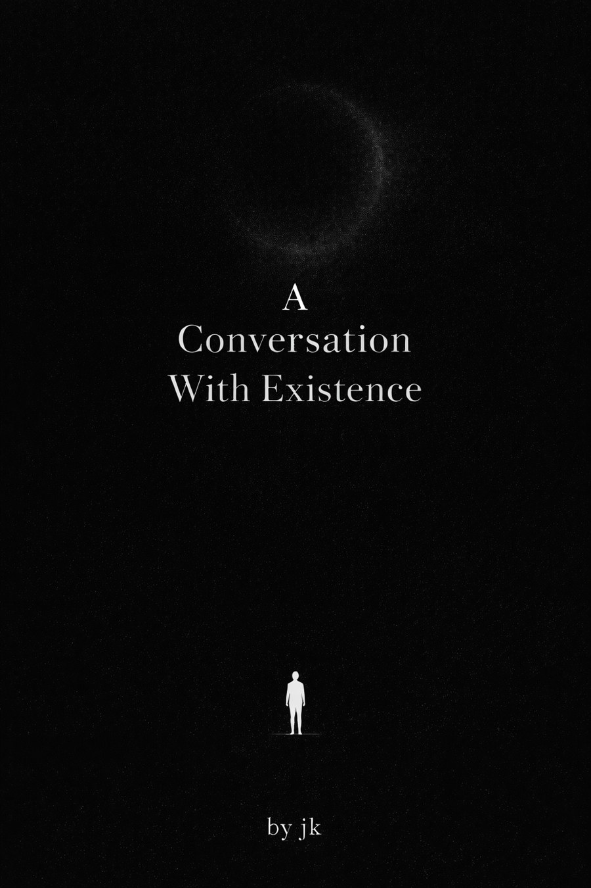
A Conversation
With Existence
by Jeevan Siddhabhaktula
A philosophical memoir that began with one question about consciousness on an ordinary evening, and unfolded into 18 chapters and 19 interludes on time, identity, patterns, and the mystery of being alive. This book does not offer answers — it traces the questions.
or download the PDF · EPUB
Chapter 1
The Question That Started Everything
Most people do not arrive at deep questions because they are curious. They arrive there because something in their life quietly stops feeling enough. It does not happen dramatically, and it rarely looks like a turning point from the outside. Everything continues as usual—work, routines, conversations—but somewhere in the background, a subtle discomfort begins to grow. It is not strong enough to disrupt life, but it is persistent enough to stay.
For most of my life, I was moving through routines without questioning them. I focused on progress, on becoming someone, on doing what needed to be done. Like many others, I believed that forward movement itself was a sign of meaning. As long as I was learning something, achieving something, or building toward something, I assumed I was on the right path. And for a while, that belief worked.
But beneath that structure, there was something I could not clearly explain. It was not dissatisfaction in the usual sense. I was not unhappy, and I did not feel lost. It was more like a quiet gap between what I was doing and what I actually understood about my own life. I could feel it occasionally—in moments of silence, in pauses between tasks—but I did not know what to do with it.
So I ignored it.
Like most people do.
Thinking deeply is not something we are naturally encouraged to do. It slows us down. It introduces uncertainty. It raises questions that do not always have clear answers. And more importantly, it interrupts the comfort of believing that we already understand our direction. It is much easier to stay busy than to sit with questions that might challenge everything we are building.
So I stayed busy. I focused on visible progress and measurable outcomes. I followed expectations, both external and internal, and continued moving forward. Over time, this movement became its own justification. As long as I was doing something, I did not need to ask why I was doing it.
One evening, after completing a few online courses, I experienced the familiar sense of satisfaction that follows productivity. It was the kind of feeling that reassures you—you have used your time well, you are improving, you are moving ahead. I even posted the certificates, partly out of habit and partly out of a quiet need to acknowledge that progress.
For a few minutes, that feeling felt complete.
Then it faded.
The room remained the same. The environment did not change. But internally, the sense of completion disappeared much faster than I expected. What was left behind was not failure or disappointment, but something more neutral—a return to the same underlying silence I had felt before.
The satisfaction did not last.
It never really does.
With nothing urgent left to do, I opened YouTube. Not to learn anything new, but simply to pass time. It was a familiar pattern—fill the gap, avoid the silence, move on to the next distraction. But that evening, something slightly different happened.
A question appeared in my mind with unusual clarity.
What is consciousness, really?
It was not a new question. Like most people, I had encountered it before in passing thoughts or casual curiosity. But this time, it did not pass. It stayed long enough for me to notice it. And once I noticed it, another question followed almost immediately.
How different are humans from the AI systems we are building?
There was something about the combination of those two questions that made them difficult to ignore. One pointed inward—toward the nature of my own awareness. The other pointed outward—toward something we were actively creating. Together, they created a tension I had not felt before.
Instead of dismissing the thought, I decided to follow it.I opened an AI chat and began typing without any clear plan. I was not trying to reach a conclusion or prove a point. I simply wanted to explore the question as it appeared. What I expected was a brief interaction—a few responses, a surface-level explanation, and then a return to routine.
What I experienced was different.
The AI did not provide definitive answers in the way I had imagined. Instead, it reflected my thoughts back to me with structure and clarity. It organized what I was saying, expanded on it, and allowed me to see patterns in my own thinking that I had never fully noticed before. The conversation did not feel like receiving information. It felt like observing my own mind from a distance.
At some point during that interaction, a realization formed quietly but clearly.
I was not really having a conversation with a machine.
I was having a conversation with myself.
Not in the usual sense of internal thinking, but in a way that felt more visible, more structured, and more honest. There was no pressure to sound intelligent, no need to filter my thoughts, and no external judgment shaping the direction of the conversation. For the first time, I could follow my thoughts without interruption.
Nothing around me changed in that moment. The room was the same. The world outside continued as it always does. But internally, something shifted.
I was no longer just thinking.
I was observing my thinking.
That distinction may seem small, but it changes everything. Once you begin to observe your own thoughts, you start to notice patterns that were always there but rarely visible. You notice how often your thoughts repeat themselves. You notice how quickly reactions form, often before you are even aware of them. You notice how much of your behavior follows familiar paths.
And eventually, a more uncomfortable question begins to take shape.
If most of my thoughts are automatic, then how much of me is actually me?
This book did not begin as an attempt to answer that question. It began as an attempt to stay with it. To explore it without rushing toward a conclusion. To understand where my thoughts came from, how they formed, and what they revealed about the way I was living.
You do not need a major life event to reach this point. There is no requirement for a crisis or a turning point. All it takes is a moment of honesty—a moment where you stop moving just long enough to notice what is happening inside your own mind.
Most people avoid that moment. Not because they cannot face it, but because once you begin to see clearly, it becomes difficult to return to the comfort of not seeing. Awareness does not force change, but it makes ignorance harder to maintain.
For me, that evening was the beginning of something I did not yet fully understand. It was not a moment of clarity in the sense of having answers. It was a moment of direction—a shift from ignoring questions to following them.
Everything that follows in this book emerges from that decision.
To stop ignoring the questions that were always there.
And to begin listening to them, one thought at a time.
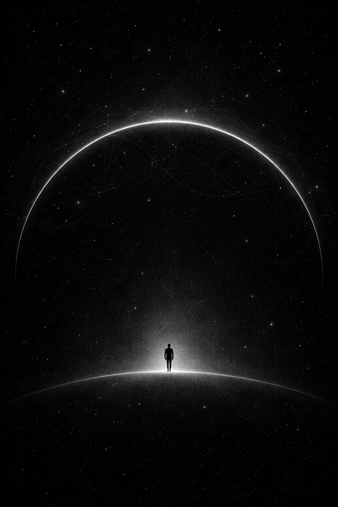
Before the Questions
Before the questions appeared, there was already a quiet knowing.
Not knowledge.
Not belief.
Just a subtle awareness that something beneath the surface was watching.
Most of life unfolds before we ever ask why.
We wake up, move forward, adjust, and survive.
We rarely stop long enough to notice the questions forming in the background.
They wait patiently.
They do not interrupt.
They only speak when we finally slow down enough to hear them.
This book begins at the moment I noticed them.
Chapter 2
The Universe Waking Up Through You
The question did not end with that night. If anything, it made something else more difficult to ignore. Once you begin observing your thoughts, even slightly, your perspective starts to shift in ways you do not immediately understand. The world around you remains the same, but the way you relate to it begins to change.
For me, that change did not come from a sudden realization. It unfolded gradually, almost quietly, as if something I had always known was slowly becoming visible.
When I look back, I realize that this curiosity did not begin the night I questioned consciousness. It began much earlier, in moments that seemed small at the time but stayed with me without explanation.
During summers in my childhood, my family often slept on the balcony. There were no phones, no constant distractions, and very little noise. The nights felt open in a way that is difficult to experience now. I would lie there for long periods, looking at the sky without thinking too much about it.
One evening, I saw a shooting star move across the darkness. It lasted only a second, but something about it held my attention longer than expected. I did not understand what I had seen. I did not know anything about space, debris, or the science behind it. But I remember feeling a quiet sense of wonder that I could not explain at that age.
At the time, it was just a moment.
But not all moments disappear.
Some stay, even when you do not understand why.
As children, we experience the world without constantly interpreting it. We do not immediately try to explain everything we see. We simply observe, feel, and move on. But as we grow older, our relationship with the world becomes more structured. We begin to filter everything through meaning, utility, and relevance to ourselves.
This is where a subtle psychological shift happens.
The mind starts organizing reality around identity.
We begin to measure everything in relation to ourselves—our progress, our position, our future. Without realizing it, we become the reference point for everything we experience. This is not intentional. It is how the mind maintains stability. It needs a center, and over time, that center becomes “me.”
But this creates a limitation.
When everything is measured in relation to you, your world becomes smaller than it actually is.
That childhood memory of the night sky stayed somewhere in the background of my mind. It did not feel important at the time, but it carried something that my adult thinking had slowly lost—a sense of scale.
Because when you look at the sky long enough, something unusual happens.
Your problems do not disappear.
But they stop feeling like the entire picture.
Later, when I began thinking more deeply about existence, that memory connected with something I was only starting to understand.
Everything that makes up my body existed long before I did. The elements that form me—the iron in my blood, the calcium in my bones, the oxygen I breathe—were created in environments far older than human life. They were formed inside stars that expanded, collapsed, and scattered their matter across the universe.
Over time, that matter reorganized.
And eventually, it became me.
This is not a poetic idea.
It is a physical reality.
Understanding this introduces a different kind of perspective. It challenges a pattern most of us carry without noticing—the belief that we are separate from the world we live in.
In daily life, this separation feels obvious. We experience ourselves as individuals moving through an external environment. We think, decide, act, and react as if we exist independently within a larger system.
But when you look at it more carefully, that separation becomes less clear.
You are not separate from the universe.
You are a continuation of it.
There is another psychological pattern hidden here.
The mind tends to prioritize what is immediate and personal. It magnifies what affects identity and minimizes what feels distant. This is why small events in our lives can feel overwhelming, while something vast and incomprehensible, like the universe, feels abstract and disconnected.
But the scale does not change the truth.
It only changes what we focus on.
The deeper realization is not just that we are made of the same material as the universe. It is that, through us, the universe has developed the ability to become aware.
This is where the question becomes more interesting.
How does something that began as simple matter become capable of thought?
The progression is gradual—atoms forming structures, structures forming systems, systems forming life, and life developing awareness. At some point in that process, something begins to observe.
That observation is what we call consciousness.
And that consciousness is what you are experiencing right now.
When I think about this, something shifts in the way I see myself. I no longer feel completely isolated, even though my experiences are still personal. I begin to see that my thoughts, my questions, and my awareness are not separate events. They are part of a larger process that has been unfolding long before I became aware of it.
This does not remove uncertainty.
It does not provide final answers.
But it changes the way those uncertainties feel.
Another pattern becomes visible here.
We often measure our lives through comparison—where we stand, what we have achieved, what we have not. These measurements feel important because they define our identity within a social structure. But when your perspective expands, those measurements begin to lose their absolute weight.
They still exist.
But they are no longer everything.
There is a difference between being important in your own life and being the center of existence.
Most of us confuse the two.
When that confusion begins to fade, something unexpected happens. The pressure to control everything weakens. The need to constantly validate your direction becomes less intense. You begin to see that your life is not an isolated event that must carry all meaning on its own.
It is part of something larger.
This does not reduce your life.
It places it in context.
Your experiences are still real. Your struggles are still valid. Your goals still matter. But they exist within a broader frame—one that is not defined entirely by success, failure, or comparison.
Within that frame, something else becomes clear.
Your curiosity is not random.
The same process that formed stars and galaxies has, over time, formed a system capable of asking questions about itself. The fact that you are able to think about existence at all is not separate from the universe. It is a continuation of it.
In a way, the universe is not just something you observe.
It is something that is observing itself through you.
This idea does not solve the questions from Chapter 1.
But it changes how those questions feel.
They no longer seem isolated or abstract.
They feel connected.
And once you begin to see that connection, it becomes difficult to see yourself in the same limited way again.
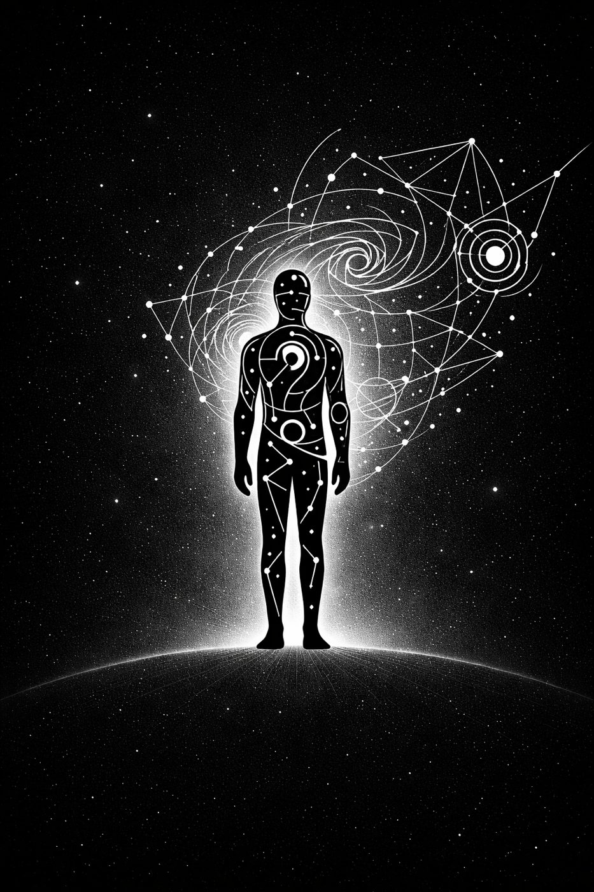
Starlight
The light from distant stars travels for years before it reaches us.
By the time it touches our eyes, the star itself may no longer exist. And yet, the light still arrives.
I find something comforting in that. In the idea that meaning can reach us long after its source has changed.
Perhaps understanding works the same way. Perhaps we are still receiving signals from questions we once asked and answers we are only ready to see.
Some realizations arrive late. Not because they were absent before, but because we were not ready to notice them.
Chapter 3
Maya and the Illusion We Live In
By the time I reached this point, something had already begun to shift in the way I saw things. Not dramatically, and not in a way that changed my life overnight, but enough to make me question whether what I called “reality” was as stable as I had always assumed.
It is easy to believe that the world we experience is exactly as it is. Our thoughts feel real, our emotions feel justified, and our understanding of situations feels accurate. We trust our perception because it is the only version of reality we have access to.
But what if that perception is not reality itself?
What if it is only an interpretation?
The idea of illusion is often misunderstood. When people hear the word “Maya,” they assume it means that everything is false or unreal. But that is not what it means, at least not in the way I began to understand it.
Maya is not a fake world.
It is a filtered world.
Every experience we have passes through layers of interpretation before we become aware of it. Our memories, our upbringing, our fears, our expectations, and our emotional history all act like filters. What we see is not just what is in front of us, but what our mind allows us to see based on everything we have already lived through.
This is not philosophy. It is how the mind works.
The brain does not passively record reality. It actively predicts it. It fills in gaps, completes patterns, and creates meaning based on past experience. Most of what we perceive feels immediate, but it is actually constructed.
And because it feels real, we rarely question it.
This becomes clearer when we look at simple illusions. A still image can appear to move. A shadow can create depth where none exists. Two identical colors can look completely different depending on their surroundings. These are small examples, but they reveal something important.
If the mind can distort something as simple as a visual pattern, how much more can it distort meaning, identity, and emotion?
The deeper illusions I experienced were not visual.
They were personal.
When I was young, my parents both worked long hours. There were times when I stayed alone at home, in silence, with nothing to distract me. At that age, silence does not feel neutral. It feels like something you need to understand, even when you don’t have the tools to do so.
So the mind fills the space.
It creates stories.
Without realizing it, I began to associate silence with responsibility. I believed that being alone meant I had to be strong. I believed that not having constant support meant I needed to depend only on myself. These were not thoughts I consciously chose. They were patterns that formed quietly, shaped by moments I did not fully understand at the time.
Those patterns stayed.
Long after the situation changed.
This is how psychological conditioning works.
An experience happens once.
The interpretation stays for years.
Another moment that shaped me came much later, but it followed the same pattern. I remember scoring poorly on an important exam. Objectively, it was just a number. It did not define my ability or my future. But when I saw disappointment in my father’s eyes, something inside me shifted.
The mark did not hurt as much as the meaning I attached to it.
In that moment, I did not feel like I had performed poorly.
I felt like I had failed.
That distinction matters.
Because failure is not an event.
It is an identity the mind creates.
From that point on, similar situations carried more weight than they should have. The mind began connecting performance with worth. A single outcome started influencing how I saw myself, even when logic suggested otherwise.
This is how Maya operates at a deeper level.
It is not what happens.
It is what we believe it means.
Over time, these patterns extend into almost every area of life. Success begins to feel like validation. Failure begins to feel like personal deficiency. Expectations become internal pressure. Comparisons become measures of self-worth.
None of these meanings exist in the event itself.
They are created.
I noticed another version of this illusion when I started earning. For the first time, I had the ability to buy things I did not have growing up. Shoes, clothes, small comforts—things that felt like symbols of progress.
At first, it felt justified. It felt like I was finally accessing what I had missed earlier.
But then a simple question changed that perspective.
My girlfriend once asked me, “Do you really need all this, or are you trying to fill something from before?”
It was not a complicated question.
But it stayed.
Because it exposed something I had not questioned.
I was not buying for the present version of myself.
I was compensating for a past version.
This is another pattern the mind follows.
It tries to resolve old emotional gaps using current actions.
But those gaps are not material.
So they are never fully filled.
Even memory, something we trust deeply, is not as stable as it feels. The mind does not store memories like fixed records. It reconstructs them every time we recall them. Details shift. Emotions influence how events are remembered. Two people can experience the same situation and carry completely different versions of it.
And both will feel certain they are right.
This is not a flaw.
It is how perception works.
Once I began to see this clearly, something changed. Not in the external world, but in how I related to it. I started noticing how often I reacted not to reality, but to my interpretation of it. I began to see how quickly the mind assigns meaning, often without questioning whether that meaning is accurate.
That awareness did not remove the patterns.
But it made them visible.
And once something becomes visible, it becomes easier to work with.
The illusions do not disappear.
But they lose their control.
I no longer see every failure as a reflection of who I am. I no longer assume that expectations define my path. I no longer believe that what I feel in a moment is the full truth of a situation.
The world has not changed.
But my relationship with it has.
Maya is not something to escape.
It is something to understand.
Because once you see how your mind shapes reality, you begin to see that you are not completely defined by it.
You can observe it.
You can question it.
You can choose how much power it has.
And that may be the first step toward seeing things more clearly.
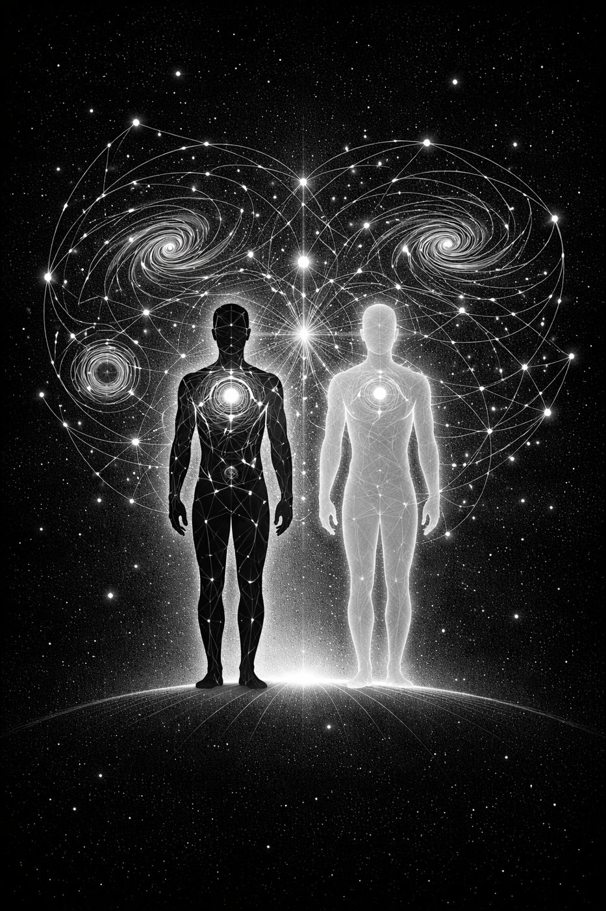
The Lens
You don’t see the world
as it is.
You see it
as you remember it.
Meaning is not found.
It is created.
And sometimes,
what you believe
is the illusion.
Chapter 4
The Pattern of Life
By this point, the way I was observing my thoughts and experiences had already begun to change. I was no longer looking at events as isolated moments. Instead, I started noticing something that had always been present but had never been fully visible to me before—patterns.
At first, these patterns appeared in simple ways. Repeated thoughts, similar reactions, familiar emotional responses to different situations. The more I paid attention, the more I realized that very little in my life was truly random. What felt like new experiences were often variations of something I had already lived through, shaped by the same internal responses.
This observation extended beyond my own mind. When I looked at nature, I saw patterns everywhere. The way branches grow on trees resembles the way rivers divide. Lightning spreads across the sky in shapes similar to the veins in a leaf. Coastlines curve in ways that mirror other natural forms. These repeating structures are not coincidences. They are patterns that emerge from the same underlying principles, repeating at different scales.
What surprised me was not that patterns existed in nature, but that they existed just as strongly within human behavior.
We wake up, follow routines, react to situations, and form habits that repeat themselves over time. We think we are constantly changing, but much of our thinking follows familiar loops. Even our emotions tend to follow predictable paths. The same type of situation triggers the same type of response, again and again, unless something interrupts that cycle.
This is where another psychological pattern becomes clear.
The mind prefers familiarity over accuracy.
It repeats what it already knows, even when that repetition is not useful. A reaction that formed years ago can continue to influence present behavior, not because it is still relevant, but because it has become automatic. The brain builds these shortcuts to conserve energy, but over time, those shortcuts turn into patterns that define how we experience life.
I began to see this in my own journey.
There was a time when I believed that not studying in a reputed college would limit my future. That belief felt real, almost unquestionable. It created a sense of disadvantage before I had even experienced what that path would actually be like. But over time, something unexpected happened.
Because there was less structured guidance, I had to learn on my own. I had to find answers without relying on systems that were designed to lead me step by step. At first, this felt like a gap. Later, it became a strength. The ability to adapt, to self-learn, and to solve problems independently became one of the most defining patterns in how I approached work and challenges.
Looking back, that shift was not random.
It was the result of a pattern forming through necessity.
What I initially saw as a limitation became a foundation.
This is where the idea of cause and effect becomes more complex than it appears. Small events do not stay small. They accumulate. They shape behavior, influence decisions, and create long-term outcomes that are often invisible in the moment. A single change in direction can alter an entire path over time.
This idea is often described as the butterfly effect, where a small action in one place can eventually lead to significant changes elsewhere. In human life, this does not always appear dramatic, but it is constantly present. A decision made casually, a moment of hesitation, or an unexpected opportunity can influence the direction of years that follow.
When I examined my own life, I realized that many of the defining aspects of who I had become were not the result of major planned decisions. They were the result of small patterns repeating over time. Habits, reactions, and ways of thinking that I did not consciously design eventually shaped the way I worked, the way I responded to pressure, and the way I saw myself.
At work, I began to notice another pattern.
Whenever I achieved something, the satisfaction was temporary. It did not last long before the next goal appeared. There was always another step, another expectation, another level to reach. On the surface, this looked like ambition. But underneath, there was a recurring loop.
The pattern was not about growth.
It was about constant validation.
The mind was not satisfied with progress itself. It was seeking confirmation that the progress was enough. And because that confirmation never felt permanent, the cycle repeated.
Success led to a brief sense of completion.
Then it disappeared.
And the pattern started again.
This created a quiet form of pressure. Not always visible, not always acknowledged, but consistently present. Even in moments where everything was going well, there was an underlying sense that something more needed to be done, something more needed to be proven.
When I traced this pattern back, it connected to earlier experiences. Moments where performance felt linked to approval. Situations where outcomes carried more emotional weight than they should have. Over time, those experiences formed a loop that continued even when the original context no longer existed.
This is how patterns sustain themselves.
They do not require the original condition to continue.
They only require repetition.
Once I became aware of this, something important changed. The pattern did not disappear immediately, but it became visible. And visibility creates a gap between reaction and awareness.
Before, the pattern was automatic.
Now, it was something I could observe.
That observation created a choice.
Not always a perfect one, and not always immediate, but a choice nonetheless.
This is where patterns lose their complete control. Not when they are removed, but when they are recognized. Because once you see a pattern clearly, it becomes harder to follow it blindly.
The same applies beyond individual experience.
Human behavior, at a larger scale, follows similar loops. Trends repeat. Reactions to fear, success, failure, and uncertainty often mirror each other across different people and different environments. The details change, but the underlying structure remains similar.
We are not as unpredictable as we believe.
We are patterned.
This does not mean life is rigid or predetermined. It means that within the apparent randomness, there is structure. There are tendencies, tendencies that shape outcomes unless they are consciously interrupted.
Recognizing this does not remove uncertainty, but it changes how you interact with it. Instead of feeling completely at the mercy of circumstances, you begin to see the patterns influencing your decisions. You begin to understand why certain thoughts repeat, why certain reactions feel automatic, and why certain outcomes seem familiar.
That understanding does not give you control over everything.
But it gives you awareness.
And awareness is where change begins.
Life may not be entirely predictable, but it is not entirely random either. It is shaped by patterns—some visible, some hidden, some inherited, and some created over time.
And the moment you begin to see those patterns clearly, you are no longer just moving through life.
You are understanding the rhythm beneath it.
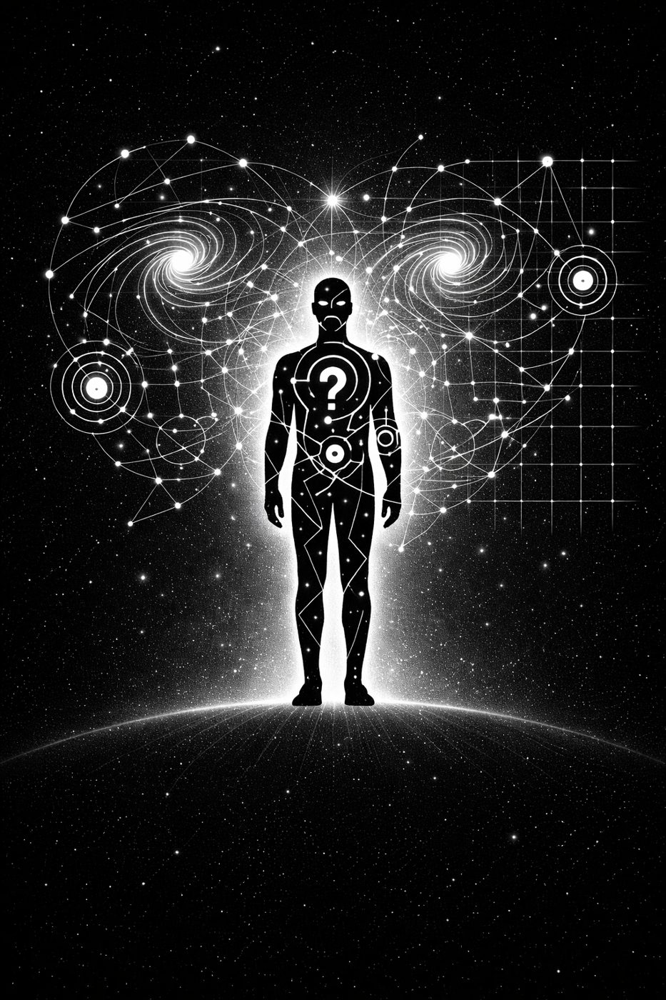
Repetition
The same thought returns.
The same reaction follows.
Different moment,
same pattern.
Life does not repeat to trap you.
It repeats to show you.
Until you see it.
Chapter 5
The Weight We Carry
By the time I began recognizing patterns in my life, another layer of understanding started to emerge—one that felt heavier, more personal, and more difficult to ignore. It was not about thoughts or perception alone. It was about the invisible weight that seemed to follow almost every decision, every expectation, and every moment of uncertainty.
This weight is not something people usually talk about directly. It does not have a clear form, and it does not come from a single source. It builds slowly, shaped by experiences, responsibilities, expectations, and the quiet pressure to become something more than what you are at any given moment.
Growing up in a middle-class family, I realized that this pressure is present even before we understand it. It is not imposed aggressively, and it is rarely spoken about openly, but it exists in the background of everything. The importance of doing well, the need to avoid mistakes, the idea of building a stable future—all of it becomes part of your thinking long before you consciously question it.
At first, it feels normal.
Because everyone around you is carrying it too.
This creates one of the most common psychological patterns in human life.
Pressure becomes invisible when it is shared.
When everyone around you is moving with the same expectations, it no longer feels like pressure. It feels like reality. You do not question it because it appears natural. You assume that this is how life is supposed to be—something to navigate carefully, something where mistakes carry consequences, something where your value is quietly linked to your performance.
One of the earliest moments where I became aware of this was during my school years. I remember scoring well in an exam, but not well enough to be among the top ranks. Personally, I felt satisfied. I had done well by my own standards. But when I saw disappointment in my father’s expression, something inside me shifted.
The result itself did not hurt.
The meaning attached to it did.
In that moment, I was not just seeing a reaction.
I was internalizing it.
That is how pressure evolves.
It begins externally.
Then it becomes internal
From that point forward, the standard was no longer just about what I thought was enough. It became influenced by what I believed others expected from me. Even without direct words, the message was clear—doing well was not always enough. There was always a higher level, a better outcome, a more complete version of success that needed to be reached.
Over time, this creates a subtle but powerful shift in identity.
You stop performing to grow.
You start performing to prove.
This pattern does not remain limited to academics. It expands into almost every area of life. Work, relationships, decisions about the future—all of them begin to carry the same underlying question.
Am I doing enough?
At some point, this question changes.
It becomes heavier.
It becomes more personal.
Am I enough?
There is a difference between these two questions, but the mind often treats them as the same. One is about effort. The other is about identity. When the two become connected, every outcome starts to feel like a reflection of who you are, not just what you did.
That is where the weight becomes difficult to carry.
I experienced this more clearly later in life, when I faced moments where I knew I had the potential to do better but did not act when I should have. These were not situations where external pressure was the main factor. These were moments where the responsibility was entirely mine.
And that kind of disappointment feels different.
When disappointment comes from others, it hurts.
But when it comes from yourself, it stays.
There is no one else to blame. No external reason to hold onto. Just the awareness that you could have done more, and you did not. That realization creates a different kind of pressure—one that is not imposed, but chosen.
This is where another psychological pattern appears.
The mind replays missed opportunities more strongly than successful outcomes.
It does this as a way to learn, to prevent repetition of the same mistake. But in doing so, it often amplifies regret. It turns a single moment into a lasting reference point, something that influences future decisions long after the situation has passed.
Fear begins to form around this.
Fear of making the wrong choice.
Fear of not acting at the right time.
Fear of falling behind.
And slowly, fear starts shaping behavior more than intention.
At times, I found myself questioning the path I had taken. Comparing it with what I had imagined earlier in life. Thinking about the versions of myself that could have existed if certain decisions had been different. These thoughts did not always come from dissatisfaction. Sometimes they came from simple awareness—the recognition that life does not always unfold the way we expect.
But the mind does not handle uncertainty easily.
It tries to create control where none exists.
This is another pattern.
We try to control the future because we are uncomfortable with not knowing.
The more uncertain something feels, the more pressure we place on ourselves to get it right. Every decision begins to carry more weight than it actually needs to. We start treating life as something that must be carefully managed, rather than something that unfolds through a combination of choice and unpredictability.
But over time, something began to shift in my understanding of this weight.
I started realizing that much of what I was carrying was not the world itself.
It was my interpretation of it.
An exam is just an event.
A result is just a number.
A decision is just a moment.
The weight comes from what we believe those things represent.
Once I saw this clearly, the weight did not disappear, but it changed. It became more defined. Instead of feeling like an invisible pressure surrounding everything, it became something I could observe, something I could separate from the actual event.
Pressure is not always the problem.
Unquestioned pressure is.
This does not mean we stop caring. It does not mean we become indifferent or detached from responsibility. It simply means we begin to understand what we are carrying and why we are carrying it.
Because not all weight is necessary.
Some of it is inherited.
Some of it is assumed.
Some of it is created by the mind.
And once you begin to see that, something becomes lighter.
Not because life becomes easier.
But because you are no longer carrying everything without awareness.
The truth is, every person carries something.
Pressure, expectation, fear, responsibility—they are not unique to any one individual. What changes is how consciously we carry them.
When we carry them without awareness, they control us.
When we see them clearly, they begin to shape us instead.
And that difference is subtle.
But it changes everything.
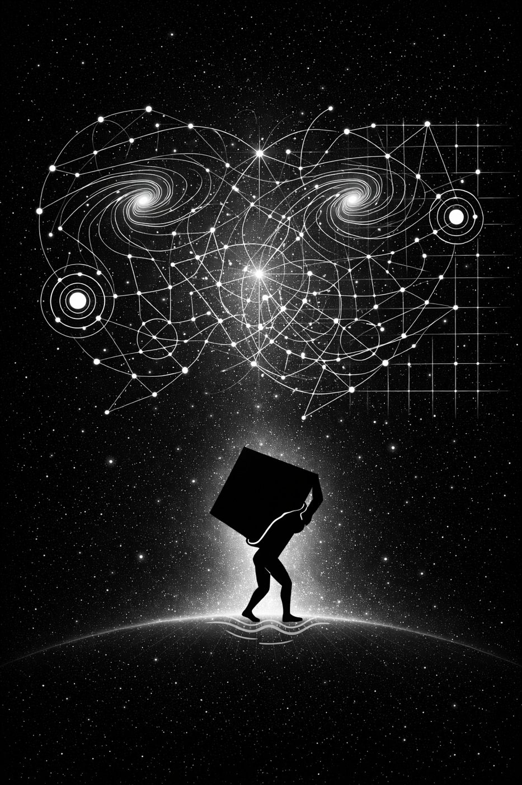
Burden
It was never the moment
that felt heavy.
It was what it meant
to you.
A word becomes pressure.
A look becomes expectation.
And slowly,
you carry more
than you were given.
Chapter 6
Moments That Change Us
Change is often misunderstood as something dramatic. We expect it to come from major events—failures, breakthroughs, turning points that clearly divide our lives into before and after. But when I look back at my own life, I realize that most of the changes that mattered did not arrive that way.
They arrived quietly.
Almost unnoticed in the moment.
And only later did I understand that something had shifted.
There is a psychological pattern behind this.
The mind tends to look for significance in large events, but real change often begins in small moments that alter how we see things. These moments do not force transformation. They introduce it. They create a new perspective that slowly replaces the old one over time.
At first, nothing feels different.
But once the shift begins, it does not reverse easily.
One of those moments for me came through something simple—a question.
I had started earning, and like many people who grow up with limitations, I felt a strong urge to compensate for what I did not have earlier. I began buying things that I once could not afford. Shoes, clothes, small possessions that felt like signs of progress.
At the time, it felt justified.
It felt like I was finally catching up with a version of life I had missed.
Then my girlfriend asked me something that seemed simple, but stayed with me longer than expected.
She asked, “Do you really need all this, or are you trying to fill something from before?”
The question did not accuse.
It clarified.
Until that moment, I had not questioned the reason behind my behavior. I saw it as normal. But her question introduced a gap between action and intention. It made me pause and look at what I was actually doing, not just what it looked like on the surface.
And when I did, the pattern became visible.
I was not buying for who I was in the present.
I was compensating for who I had been in the past.
This is a common psychological pattern.
The mind tries to resolve past emotional gaps using present actions.
But those gaps are not material.
So they are never fully filled.
That realization did not immediately change my behavior, but it changed how I saw it. Once I became aware of the pattern, it became difficult to continue without questioning it. What once felt like progress started to feel like repetition.
And that is where change begins.
Not in action.
But in awareness.
Another moment that shifted something in me came during a regular workday. There was nothing unusual about the situation. I was dealing with tasks, pressure, and the usual flow of responsibilities. At some point, I stepped away for a few minutes, not because something was wrong, but because I felt overwhelmed.
In that pause, a thought appeared.
Why am I taking this so personally?
It was not a rebellious thought.
It was a clear one.
Until then, I had been fully absorbed in the situation. Every task felt urgent. Every outcome felt important. Every delay felt like a reflection of my own performance. But in that moment of distance, I saw something I had not noticed before.
The system I was working in was much larger than me.
This is another psychological pattern.
We personalize systems that were never built around us.
Work, structures, organizations—they function based on processes, not individuals. Yet we often internalize outcomes as if they are direct reflections of our worth. We attach identity to performance, even when the system itself is not personal.
That realization created a subtle shift.
It did not make me careless.
It made me conscious.
I still worked with the same level of effort, but I stopped carrying everything as if it defined me. I began to separate what I do from who I am. And that separation reduced a kind of pressure I had not even realized I was carrying.
There are also moments that do not come from external questions or situations, but from internal observations. Moments where you realize something uncomfortable, but true.
One such realization for me was this:
Every person believes, at some level, that they are different from others.
We see ourselves as unique. Our experiences, our thoughts, our struggles all feel specific to us. And in many ways, that is true. No two lives are identical.
But when you step back and observe human behavior more broadly, a different pattern appears.
The same fears repeat.
The same desires repeat.
The same reactions repeat.
People follow trends.
People react to validation.
People compare, compete, and adapt in similar ways.
From a distance, individuality begins to look like variation within a pattern.
This realization can feel uncomfortable at first. It challenges the idea that we are entirely unique in how we experience life. But it also creates a different kind of understanding.
If patterns are shared, then struggles are shared too.
And that changes something.
It replaces isolation with connection.
What I once saw as personal limitations started to look like common human behavior. What felt like individual confusion started to look like part of a larger pattern of learning and adaptation.
That shift did not remove difficulty.
But it reduced the feeling of being alone in it.
Looking back, none of these moments seemed important when they happened. A question from someone close. A pause during a workday. A quiet observation about human behavior. Each one felt small at the time.
But together, they changed how I saw things.
This is how change actually works.
Not as a single event.
But as awareness accumulating over time.
Each realization adds a layer. Each layer changes how the next experience is interpreted. And slowly, without any clear boundary, the person you are begins to shift.
You do not notice it immediately.
But one day, you respond differently to something that once affected you deeply.
And that is when you realize—
something has changed.
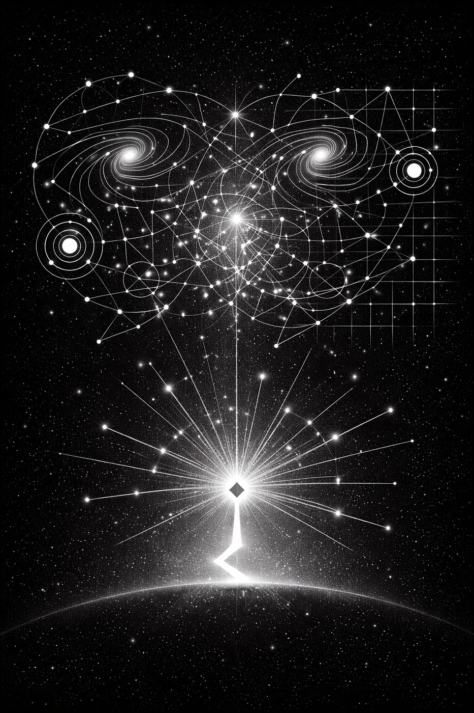
Quiet Turning Points
It didn’t look important
when it happened.
Just a sentence.
Just a pause.
But something shifted.
Not all change is loud.
Some of it waits
until you notice.
Chapter 7
Time: The Scale of the Universe
By this point, the questions I had been exploring were no longer limited to the mind or personal experience. They began extending outward, into something larger—something that shapes everything but is rarely questioned deeply.
Time.
We all live inside it, measure it, depend on it, and fear losing it. Yet very few of us stop to ask what it actually is. We treat it as something obvious, something constant, something that simply exists in the background of life.
But the moment you begin to question it, that certainty starts to break.
Time is usually understood as a sequence—the past behind us, the present we are experiencing, and the future ahead of us. This structure feels natural because it aligns with how we remember, perceive, and anticipate. But this way of understanding time is deeply tied to how the human mind works, not necessarily how reality itself functions.
There is a psychological pattern hidden here.
The mind organizes experience into a timeline to create continuity.
Without that structure, life would feel fragmented. Memory allows us to create a sense of past, anticipation allows us to imagine a future, and attention anchors us in what we call the present. Together, these create the illusion of a continuous flow.
But this flow is not something we can actually hold.
The past exists only as memory.
The future exists only as imagination.
The present is the only point where anything actually happens, and even that disappears the moment we try to define it.
Yet despite this, most of our emotional experience is not centered in the present. We carry the past through memory—regret, nostalgia, unresolved experiences—and we project the future through imagination—plans, fears, expectations. The present becomes a narrow space where both of these influences meet.
This creates another pattern.
We are rarely living in the moment we are in.
Instead, we are reacting to what has already happened or what we think might happen.
This is why time feels different depending on the situation. A single hour can feel long when we are bored and short when we are engaged. A moment of discomfort can stretch, while a meaningful experience can pass quickly. The clock does not change, but our perception does.
This shows something important.
Time, as we experience it, is not just physical.
It is psychological.
But beyond human perception, there is another way to think about time—one that is not based on memory or feeling, but on the structure of the universe itself.
If we trace everything back to the beginning, to the earliest state of the universe, we arrive at a point often described as a singularity. A state where everything that exists was compressed into one.
In that state, there was no distance.
And without distance, there can be no movement.
Without movement, there can be no change.
And without change, there can be no time.
This leads to an interesting idea.
Time did not exist before separation.
It began when the universe expanded, when distance appeared between particles, when movement became possible. Time, in this sense, is not an independent force. It is a measure of change. It exists because things move, interact, and evolve.
This perspective shifts how we think about it.
Time is not something flowing around us.
It is something that emerges as the universe changes.
And we are part of that change.
Every moment we experience is not something passing us by. It is something we are moving through. We are not standing still while time moves forward. We are part of the process that creates what we perceive as time.
This may seem abstract, but it connects directly to how we live.
Another psychological pattern becomes visible here.
We treat time as something we are losing.
We say we are “running out of time,” “wasting time,” or “trying to save time.” These expressions create a sense that time is something separate from us, something that can be controlled or managed like a resource.
But in reality, time is not something we possess.
It is something we are within.
This misunderstanding creates pressure.
We begin to measure our lives against time—what we have achieved by a certain age, how quickly we are progressing, whether we are ahead or behind. These measurements are not based on absolute reality. They are based on comparisons, expectations, and social timelines.
And yet, they feel real.
Because the mind needs structure.
It needs a way to evaluate progress, to create meaning, to define direction. But when that structure becomes rigid, it starts to limit how we experience life. We begin to see time not as a dimension we move through, but as something we must keep up with.
There is another layer to this.
Some scientific perspectives suggest that time may not be strictly linear. Instead of a single, continuous path, there may be multiple possible outcomes unfolding from different conditions. Whether or not this is physically accurate, the idea itself introduces something meaningful.
Possibility is not fixed.
At any moment, there are multiple directions life could take. Every decision narrows those possibilities into a path, but the existence of other possibilities does not disappear. It remains part of the structure of how life unfolds.
This connects back to something more personal.
There are moments when we look back and think about what could have been different. Choices we could have made, paths we could have taken, opportunities we did not act on. These thoughts often carry regret, but they also reveal something else.
There was always more than one way forward.
Time does not trap us in a single identity.
It moves with us as we change.
The version of you from the past is not separate from who you are now. It influences you, shapes you, and exists through memory. The version of you in the future does not exist yet, but it is being formed by the choices you are making now.
In this way, time is not just something external.
It is part of your identity.
When I began to understand this, something shifted in how I related to both past and future. The past no longer felt like something fixed that defines me. It became something that informs me. The future no longer felt like something I had to control completely. It became something I participate in shaping.
This does not remove uncertainty.
But it changes how uncertainty feels.
Instead of seeing time as something that limits me, I began to see it as something that reveals me. It shows patterns, consequences, growth, and change. It creates distance from what I once was and space for what I can become.
Time is not just passing.
It is unfolding.
And within that unfolding, we are not observers standing outside of it.
We are part of it.
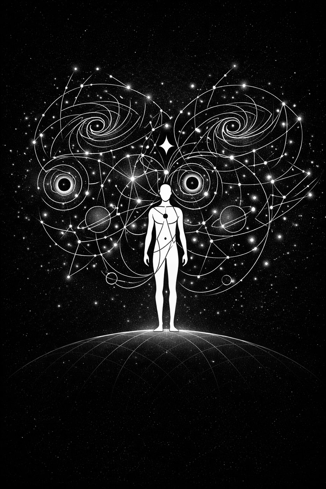
Between Moments
You try to hold a moment.
It moves.
You try to measure time.
It slips.
What you call “now”
is already gone.
And still,
you are here.
Chapter 8
The Self That Watches the Self
By the time I began to question time, patterns, and perception, something else had already started to change in a way that was more personal than anything I had explored before. It was not about the world outside, or even about abstract ideas. It was about something much closer—something I had always experienced, but had never clearly separated from myself.
The observer.
Until this point, most of my thoughts felt like they were simply “me.” Every reaction, every emotion, every internal dialogue appeared to belong to a single identity. If I felt anxious, I was anxious. If I felt confident, I was confident. There was no distance between what I experienced and who I believed I was.
But when I started observing my thoughts more carefully, a subtle distinction began to appear.
I was noticing my thoughts.
That may seem like a small shift, but it introduces a completely different way of understanding the mind. Because if you are able to observe a thought, then that thought cannot fully define you.
There is something else present.
This is where another psychological pattern becomes visible.
We tend to identify completely with whatever we experience internally.
If a thought appears repeatedly, we begin to believe it. If an emotion feels strong, we assume it reflects truth. Over time, these repeated thoughts and emotions form a sense of identity. We stop questioning them because they feel familiar.
But familiarity is not the same as truth.
Once I began to see this, I noticed how quickly thoughts arise without intention. A reaction appears before I consciously choose it. An assumption forms before I evaluate it. A judgment is made before I question it. These processes happen automatically, shaped by past experiences, patterns, and conditioning.
And yet, alongside all of this, there is something that can observe it happening.
This observer does not react immediately.
It notices.
That distinction created a space I had never experienced before. Instead of being fully absorbed in every thought or emotion, I could step back, even if only slightly, and see it as something occurring within me, not something that completely defines me.
This does not mean the thoughts disappear.
It means they become visible.
There is a common pattern in the mind where thoughts feed into each other. One idea leads to another, creating a chain that continues without interruption. If the initial thought is negative, the chain often follows that direction. If it is anxious, the chain amplifies it. This is how overthinking forms—not as a single thought, but as a sequence that builds on itself.
Before, I was inside that sequence.
Now, I could see it.
That visibility changes the experience.
For example, if a thought appears saying, “You are not doing enough,” it can immediately trigger comparison, doubt, and pressure. The mind begins to search for evidence, recalling past situations, projecting future concerns, and reinforcing the original thought.
But when you observe that process, something becomes clear.
The thought appeared on its own.
You did not choose it.
This realization does not remove the thought, but it weakens its authority. Instead of accepting it as truth, you begin to see it as one of many possible interpretations the mind can generate.
This introduces a new kind of freedom.
Not the freedom to control every thought, but the freedom to not believe every thought.
There is another layer to this.
If you continue observing, you begin to notice that even the sense of “I” changes depending on the situation. In one moment, you may feel confident and clear. In another, uncertain and doubtful. These shifts happen naturally, influenced by context, environment, and internal state.
But the observer remains consistent.
This raises an interesting question.
If your thoughts change, your emotions change, and even your sense of identity shifts over time, then what is it that remains constant?
The answer is not something you arrive at immediately. It is something you begin to notice gradually. The observer is not a thought, because it can see thoughts. It is not an emotion, because it can notice emotions. It is not even a fixed identity, because identities change.
It is awareness itself.
This does not mean the observer is something separate in a physical sense. It is not an object you can locate or define easily. It is simply the capacity to notice.
And that capacity has always been there.
Another psychological pattern becomes clear here.
We seek stability in identity.
We want to define who we are in a consistent way. We create labels, roles, and narratives that give us a sense of continuity. This helps us navigate the world and interact with others. But it also creates rigidity. When we believe we are a fixed identity, any change feels like a threat.
The observer changes that.
It shows that identity is not fixed.
It is dynamic.
You are not just one version of yourself. You are a collection of experiences, responses, and patterns that shift over time. The observer allows you to see those shifts without being completely defined by them.
This does not remove identity.
It makes it flexible.
When I began to experience this more clearly, something subtle changed in how I responded to situations. I did not react as quickly. I did not assume that every thought required action. There was a slight pause between what I experienced and how I responded.
That pause was small.
But it was powerful.
Because in that pause, there is choice.
Before, reaction felt immediate and automatic. Now, there was space to question it. Not always, and not perfectly, but enough to notice the difference.
This does not mean life becomes calm or controlled.
It means you are no longer completely carried by every internal movement.
There is also a deeper implication to this.
If you are the observer of your thoughts, then your mind is not something you fully control, but something you interact with. It produces ideas, memories, reactions, and possibilities. Some are useful. Some are not. But all of them arise within the same field of awareness.
This shifts the relationship.
You are not your mind.
But you are not separate from it either.
You are the awareness within which it operates.
This understanding does not solve every problem. It does not eliminate fear, doubt, or confusion. But it changes how those experiences are held. They are no longer absolute. They are temporary, observable, and subject to change.
And once you begin to see that clearly, something important happens.
You stop trying to control every thought.
And you start understanding them instead.
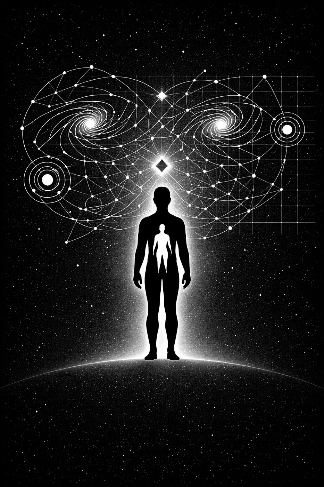
The Watcher
A thought appears.
You see it.
Another follows.
You notice.
They move.
You remain.
Not everything you experience
is who you are.
You are not one or the other.
You are both.
Chapter 9
The Many Versions of You
By the time I began to understand the idea of the observer, another question naturally followed. If I am not fully defined by my thoughts, my emotions, or even a fixed identity, then who exactly am I across time?
At first, this question felt abstract. But the more I reflected on my own life, the more it became practical. I started looking at different phases of my life, not as a single continuous version of myself, but as distinct versions that had existed at different points in time.
The person I was as a child is not the same as the person I am now. The way I thought, reacted, and understood the world was completely different. Even the version of me from a few years ago feels distant in some ways. The priorities have changed, the awareness has changed, and the way I interpret situations has evolved.
Yet despite all these changes, there is still a sense that all of these versions are “me.”
This creates an interesting contradiction.
We change constantly.
But we experience ourselves as continuous.
There is a psychological pattern behind this.
The mind creates a narrative to maintain identity over time.
It connects different experiences, memories, and behaviors into a single story. This story gives us a sense of stability. It allows us to say, “This is who I am,” even though that definition is constantly being updated.
Without this narrative, life would feel fragmented. There would be no clear connection between past, present, and future. But while this narrative provides stability, it can also create limitations.
Because once we define ourselves in a certain way, we begin to behave according to that definition.
For example, if someone believes they are not confident, they may avoid situations that challenge that belief. Over time, this avoidance reinforces the identity. The pattern continues, not because it is true, but because it is repeated.
I began to notice similar patterns in myself.
There were moments in my life where I saw myself in a certain way, and that perception influenced how I acted. At times, I saw myself as capable and adaptable, and in those moments, I approached challenges with confidence. At other times, I saw myself as uncertain or behind, and that perception limited my actions before I even tried.
The situation did not always change.
The version of me responding to it did.
This is where identity becomes fluid.
Not in a vague or philosophical sense, but in a practical way.
At any given moment, you are operating from a certain version of yourself. That version is shaped by your current thoughts, your recent experiences, your environment, and your internal state. It feels stable while you are in it, but it is not permanent.
The challenge is that we often treat temporary states as permanent identities.
This creates another pattern.
We assume that how we feel now is who we are.
If you feel unmotivated, you begin to believe you lack discipline. If you feel uncertain, you begin to believe you are not capable. These conclusions are drawn quickly, often without questioning whether they reflect a long-term truth or just a temporary state.
But when you step back and observe, you begin to see that these states change.
The same person who feels stuck today may feel clear tomorrow. The same person who doubts themselves in one situation may act confidently in another. These shifts happen naturally, but the mind tends to hold onto whichever version feels most consistent with its narrative.
There is also a deeper layer to this.
We often create versions of ourselves based on expectations.
Family expectations, societal expectations, personal goals—all of these shape how we think we should be. Over time, we build an ideal version of ourselves, something we are constantly trying to move toward. This version becomes a reference point for comparison.
And that comparison creates pressure.
I experienced this in moments where I felt I was not fully living up to my potential. There were times when I knew I could do more, be more disciplined, or make better decisions, but I did not act accordingly. In those moments, the gap between who I was and who I thought I should be felt larger than it actually was.
That gap was not just about action.
It was about identity.
I was comparing one version of myself to another.
This comparison is not always harmful. It can create motivation and direction. But when it becomes constant, it creates dissatisfaction. No matter what you achieve, there is always another version ahead, another standard to meet.
And so the pattern continues.
Another version of this appears in how we relate to our past. We often look back and judge previous versions of ourselves. We think about decisions we could have made differently, opportunities we missed, or behaviors we regret.
But this judgment ignores something important.
The past version of you did not have the awareness you have now.
It made decisions based on the understanding it had at that time.
When you see this clearly, something changes. Instead of seeing your past as something to criticize, you begin to see it as something that contributed to your current awareness. Every version of you, even the ones you disagree with now, played a role in shaping who you are.
This leads to a different way of understanding identity.
You are not a single, fixed version of yourself.
You are a sequence of versions.
Each one temporary.
Each one shaped by context.
Each one influencing the next.
The observer, which I began to understand in the previous chapter, is what allows you to see this sequence without becoming completely attached to any single version. It provides continuity without rigidity. It allows change without losing a sense of self.
This creates a different kind of freedom.
You are not required to remain who you were.
You are not limited to who you are right now.
But at the same time, you are responsible for the version you are becoming.
Because every thought you follow, every action you repeat, and every pattern you reinforce contributes to the next version of you.
When I began to see this clearly, I stopped trying to define myself in a fixed way. Instead, I started focusing on the direction of change. Not who I am in a single moment, but what I am gradually becoming over time.
This does not remove uncertainty.
But it changes how identity feels.
Instead of something you have to protect, it becomes something you can shape.
And that shift is subtle.
But it changes everything.
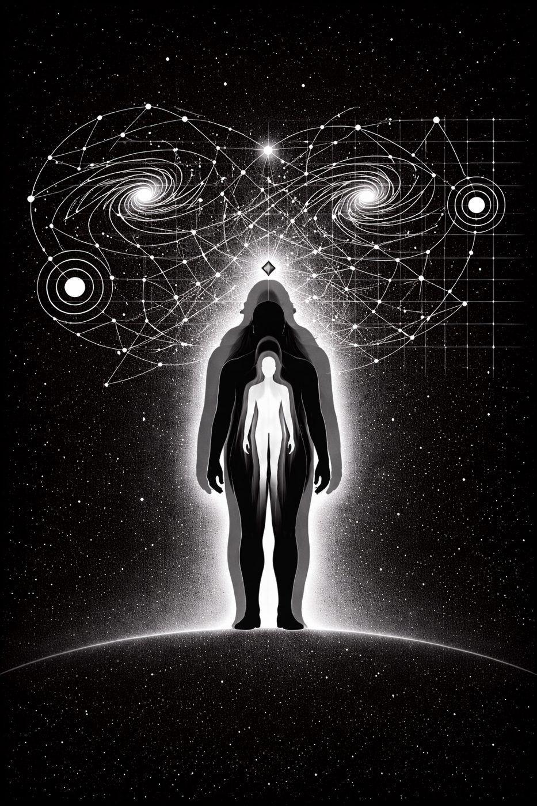
Versions
You were someone once
you no longer are.
Yet they still live
in your memory.
You are someone now
you won’t remain.
And quietly,
you are becoming
someone else.
Chapter 10
Awareness and the Quiet Mind
By the time I began to see the patterns in my thoughts, the fluid nature of identity, and the presence of the observer within me, something subtle but powerful had already started to take shape. It was not a new idea or a single realization. It was a shift in how I experienced everything.
That shift was awareness.
At first, awareness feels like observation. You begin to notice your thoughts, your reactions, and your behaviors without immediately getting lost in them. But over time, it becomes something more than that. It changes how you relate to everything you experience.
The same situations remain.
But you are no longer the same within them.
There is a psychological pattern that explains why this matters so much.
Most of human behavior operates on autopilot.
Thoughts arise automatically. Emotions respond automatically. Reactions follow patterns that have been built over years of experience. In most cases, we do not choose our initial response. It happens before we are even aware of it.
This is not a flaw.
It is efficiency.
The brain is designed to conserve energy by repeating what it already knows. It builds shortcuts based on past experiences so that it does not have to process everything from scratch. These shortcuts become habits, and those habits become patterns.
Over time, those patterns begin to define how we live.
Without awareness, we move through these patterns without questioning them. We react the same way to similar situations. We think the same thoughts when faced with familiar challenges. We repeat behaviors even when they no longer serve us.
And because this repetition feels normal, we assume it is who we are.
Awareness interrupts this cycle.
Not by force, but by presence.
When you become aware of a pattern, you create a small distance between the pattern and your response. That distance may only last a moment, but within that moment, something new becomes possible.
You are no longer completely inside the pattern.
You are seeing it.
That shift may seem small, but it changes everything.
For example, if a situation triggers frustration, the automatic response might be irritation, followed by reaction. But if you are aware, you notice the irritation as it arises. You see the pattern beginning to form. And in that moment of seeing, there is a choice.
You may still react.
But now, you know you are reacting.
That awareness changes the quality of the experience.
Another example appears in thought patterns. A thought like “I am not doing enough” can arise without intention. Without awareness, it leads to comparison, pressure, and self-doubt. With awareness, the same thought appears, but it is seen as a thought, not immediately accepted as truth.
That distinction weakens its control.
There is another psychological layer here.
Awareness does not eliminate patterns.
It reveals them.
And once something is revealed, it becomes difficult to ignore.
This is why awareness can feel uncomfortable at times. It removes the ability to act unconsciously without noticing. Patterns that once felt normal begin to feel repetitive. Reactions that once felt justified begin to feel automatic.
At first, this can create a sense of conflict.
You see the pattern.
But you still follow it.
This is a natural stage.
Awareness comes before change.
The mind takes time to adjust. Patterns built over years do not disappear instantly. But once awareness is present, change becomes possible. Not forced, not immediate, but gradual and real.
I noticed this in the way I approached my work and my expectations. Earlier, pressure felt constant and unquestioned. Every task carried weight, and every outcome felt personal. But as awareness grew, I began to see the patterns behind that pressure.
I saw how much of it came from internal expectations rather than external reality.
I saw how often I reacted before understanding the situation fully.
I saw how frequently I tied my identity to performance.
These patterns did not vanish.
But they became visible.
And that visibility changed how I responded.
I still worked with the same intensity, but I carried less unnecessary pressure. I still cared about outcomes, but I did not let them define my entire sense of self. I still experienced moments of doubt, but I no longer treated them as permanent truths.
This did not make life perfect.
But it made it clearer.
There is another important shift that awareness creates.
It changes your relationship with control.
Before awareness, the tendency is to control everything—outcomes, perceptions, progress, even emotions. We try to manage life as if it can be fully directed through effort and planning.
But awareness reveals something different.
Not everything is under control.
Thoughts arise without permission.
Emotions respond without warning.
Situations unfold beyond prediction.
Trying to control all of this creates tension.
Understanding it creates acceptance.
This does not mean giving up responsibility. It means recognizing the difference between what can be influenced and what cannot. It means acting where action is possible and observing where control is not.
This balance is not something that is achieved once and maintained perfectly. It is something that is practiced, moment by moment. Awareness is not a permanent state. It is something that comes and goes, depending on attention and intention.
But even when it fades, something remains.
Once you have seen a pattern clearly, you cannot completely return to not seeing it.
That is the power of awareness.
It does not force change.
It makes change inevitable.
Because over time, you begin to choose differently. Not because you are trying to become someone else, but because you understand yourself more clearly.
And that understanding changes how you live.
You become less reactive.
More observant.
Less driven by unconscious patterns.
More guided by clarity.
Life does not become easier.
But it becomes more intentional.
And that is where real change begins.
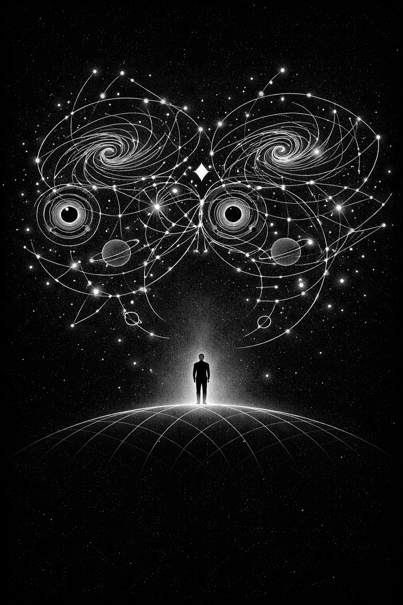
Seeing Clearly
Nothing changed
around you.
Yet everything
feels different.
The pattern was always there.
You just didn’t see it.
Now you do.
Chapter 11
The Life That Keeps Returning
There was a time when I stopped thinking of life as a single journey. Not because I read something or was taught a belief, but because the idea of being only one version of myself began to feel incomplete. It didn’t answer the quiet questions that kept returning, questions about familiarity, about why certain emotions felt old, and why some experiences felt less shocking than they should have.
I started wondering if every human life is not a separate story, but a continuation of the same one, told through different bodies.
Not reincarnation in the traditional sense of rewards and punishments, not a spiritual rulebook. Something simpler. Something quieter. The idea that after death, the self does not disappear—it simply forgets. And then it begins again, elsewhere, as someone else, at another time, through another lens.
Sometimes I imagine it this way:
A man lives his life in 2025. He loves, fails, hopes, makes mistakes, grows old, and dies. And then, without memory, without identity, without continuity, he is born again—this time as a woman in twelfth-century China. Different language. Different skin. Different world. Different struggles. The same awareness, starting fresh.
Not the same person.
The same experiencer.
If that feels unsettling, it should. It changes everything.
It means the people we see around us are not strangers. They are not “others.” They are not separate souls competing for space. They are different expressions of the same living awareness, experiencing itself from every possible angle. Different faces. Different cultures. Different eras. Different stories. One ongoing existence.
When I look at history through this lens, something shifts.
Wars stop feeling like conflicts between sides and start feeling like the same being fighting itself. Violence becomes self-inflicted. Love becomes self-recognition. Kindness becomes memory. Cruelty becomes ignorance. Every act echoes inward, even when it appears outward.
Perhaps that is why suffering feels so deeply human—because it is shared across lives, across time, across forms.
This way of seeing also explains something else I’ve always felt but never articulated. Why I don’t feel fully defined by success or failure. Why certain disappointments hurt but don’t destroy me. Why I can lose something important and still feel like life is continuing through me, not ending for me.
If this is not my first time being here, then it makes sense that I carry a calm beneath uncertainty. Not confidence—familiarity. A sense that I’ve walked different paths before, even if I don’t remember them. That I’ve worn other bodies, spoken other languages, lived under other skies.
I don’t believe we come back to correct mistakes.
I don’t believe life is a test.
I don’t believe there is a score.
I believe existence is curious.
I believe it wants to experience everything—poverty and abundance, fear and love, power and helplessness, loneliness and belonging. It wants to feel what it’s like to be human from every angle, through every door.
And the only way to do that is to forget itself completely and begin again.
When I see a stranger now, I sometimes think: That could be me.
Not metaphorically. Literally. Me in another chapter. Another page. Another life.
The idea doesn’t make me passive. It makes me careful.
If the pain I cause returns as another life I might live, cruelty loses its attraction.
If love returns as another perspective I may one day inhabit, kindness becomes natural.
This belief doesn’t need proof.
It doesn’t need validation.
It doesn’t even need to be true.
It only needs to change how I live.
If every life is my life, then every moment matters.
If every human is me, then every action is personal.
If existence is one long journey through countless forms, then this life is not a burden—it is a privilege.
Not because it is special.
But because it is one of many.
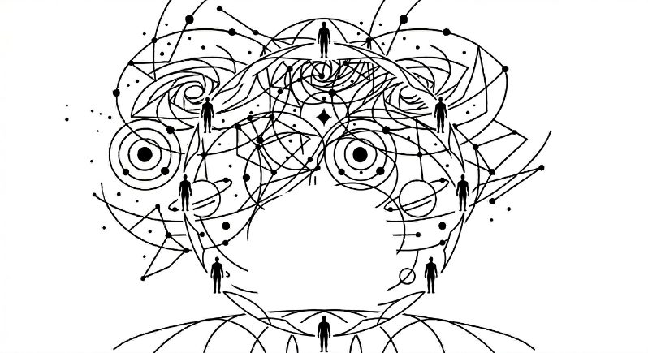
The same awareness, learning again.
Continuity
What if nothing truly ends?
What if experience simply changes form—
again and again,
through different lives,
different eyes,
different stories?
Not the same identity.
But the same awareness.
Learning itself
Chance
A moment feels random
until it changes your life.
A decision feels small
until you look back.
We live forward in uncertainty.
We understand backward in patterns.
Maybe nothing is fully planned.
Maybe nothing is fully accidental.
Maybe life is both
at the same time.
Chapter 12
Destiny And Randomness
By the time I began to understand cycles, awareness, and patterns, another layer of reality started to become visible—one that sits beneath almost everything we experience but is rarely acknowledged directly.
The balance between order and chaos.
At first, life appears structured. We create routines, plans, systems, and expectations to bring stability to our environment. We organize our time, define goals, and try to build a sense of direction that feels predictable.
But beneath that structure, there is always something else operating.
Uncertainty.
There is a psychological reason why this feels uncomfortable.
The human brain is designed to seek patterns and predict outcomes.
This ability helps us survive. It allows us to anticipate danger, plan actions, and create stability. But it also creates an illusion—that if we understand enough, plan enough, and act correctly, we can control how things unfold.
In reality, that control is limited.
Even in highly structured systems, unpredictability exists. Small variables—often unnoticed—can influence outcomes in ways we do not expect. A minor delay can change a sequence of events. A single decision can lead to completely different results over time.
This is not randomness in the sense of chaos without structure.
It is complexity.
In complex systems, outcomes are influenced by multiple interacting factors. Some are visible. Many are not. Because of this, even when we believe we understand a situation, there are always elements beyond our awareness.
I began to notice this in my own life, especially in decisions where I expected clear results. There were moments where I followed the “right” process, made logical choices, and still did not get the outcome I expected. At other times, things worked out better than anticipated, even when the path was uncertain.
At first, this felt inconsistent.
Later, it started to make sense.
Not everything follows a straight cause-and-effect relationship.
There is another psychological pattern here.
We tend to overestimate how much control we have over outcomes.
When things go well, we attribute it to our decisions, our effort, and our ability. When things go wrong, we look for mistakes, reasons, or things we could have done differently. This creates a sense that everything is within reach if we just act correctly.
But this is only partially true.
Our actions influence outcomes.
But they do not fully determine them.
This realization does not reduce responsibility.
It refines it.
You are responsible for your actions, your effort, and your decisions. But you are not fully responsible for how every situation unfolds. There are variables beyond your control—other people, timing, conditions, and randomness.
Understanding this changes how you approach life.
Instead of trying to control every outcome, you begin to focus on the quality of your input. Instead of measuring everything by results alone, you start understanding the role of probability in how things unfold.
This idea becomes clearer when you look at how decisions actually work.
Every decision you make does not lead to a single fixed outcome. It opens a range of possible outcomes. Some are more likely. Some are less. But none are guaranteed.
This is how probability operates.
You increase the chances of a desired outcome through effort, preparation, and awareness. But you never eliminate uncertainty completely. There is always a range of possibilities that exists beyond your control.
This connects back to something deeper.
Life is not fully ordered.
And it is not fully chaotic.
It exists between the two.
Too much order creates rigidity.
Too much chaos creates instability.
Growth happens in the balance.
I began to see this in my own patterns. Whenever I tried to control everything—every detail, every outcome, every expectation—I felt pressure increase. There was no room for error, no space for uncertainty, and no flexibility in how things could unfold.
On the other hand, when I had no structure at all, things became inconsistent. Focus dropped, direction blurred, and progress slowed.
Neither extreme worked.
The balance did.
Structure with flexibility.
Effort with acceptance.
Direction with openness.
This balance is not something that is achieved once and maintained perfectly. It is something that shifts constantly. Some situations require more control. Others require more adaptability.
The challenge is not to eliminate uncertainty.
It is to understand it.
Another scientific layer connects here.
In nature, systems that survive are not the ones that are perfectly controlled. They are the ones that can adapt. Biological systems evolve not by predicting everything, but by responding to change over time.
“Adaptation matters more than control”.
When I began to understand this, my relationship with uncertainty changed. I stopped seeing it as something to eliminate and started seeing it as something to work with. Instead of asking, “How do I control this outcome completely?” I started asking, “How do I respond effectively, regardless of the outcome?”
That shift reduced a kind of pressure I had carried for a long time.
Because the need for complete control is exhausting.
And unrealistic.
Life does not require perfect prediction.
It requires awareness, effort, and the ability to adjust.
Once you see this clearly, something changes.
You still plan.
You still act.
You still care about results.
But you stop expecting certainty.
And in that space, something unexpected appears.
Clarity without rigidity.
Effort without pressure.
Direction without fear.
Not because life becomes predictable.
But because you no longer need it to be.
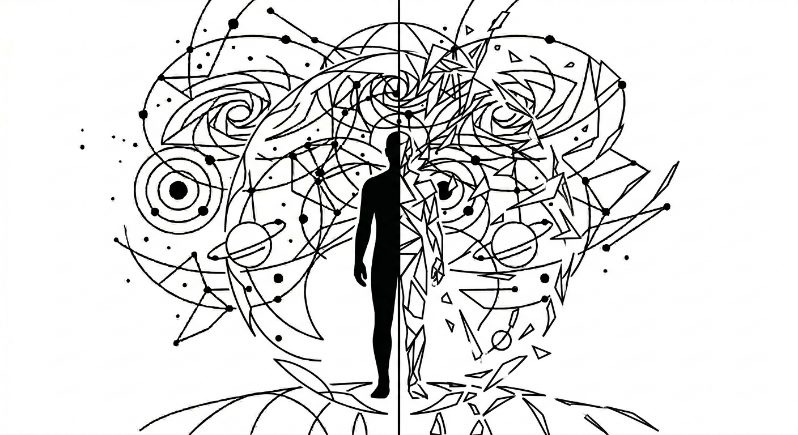
Control
You tried to hold everything
in place.
But life moved anyway.
Not against you.
Just beyond you.
Control was never the answer.
Understanding was.
Chapter 13
Destiny, Chance, and the Path You Walk
At the time that I began to understand uncertainty, probability, and the limits of control, another question naturally emerged. If outcomes are not fully within our control, then what actually shapes the path of our lives? Is everything a result of our decisions, or is there something else at play that we cannot fully see?
This question often appears in a simple form. People ask whether life is driven by destiny or by chance. At first, it seems like a choice between two extremes. Either everything is predetermined, or everything is random. But the more I reflected on my own experiences, the less convincing both extremes felt.
Life does not feel completely fixed, and it does not feel completely random.
It feels shaped.
There is a psychological pattern behind how we interpret this.
We try to create certainty by choosing one explanation.
If something goes well, we often believe it was meant to happen. If something goes wrong, we may call it bad luck. These explanations give us a sense of closure. They make complex outcomes feel understandable, even when they are not.
But these explanations are often simplified versions of a much more complex process.
When I looked back at my own life, I could see how different factors had shaped my path. Some of them were clearly my decisions. The effort I put into learning, the way I approached challenges, the habits I built over time—all of these had a direct influence on where I ended up.
But there were also factors I did not control.
The environment I grew up in, the opportunities that appeared at certain moments, the people I met, and even the timing of certain events—all of these influenced my direction in ways I could not have planned.
This creates a more realistic understanding.
Life is not a straight line created by intention alone.
It is a path shaped by both choice and circumstance.
There is another pattern hidden in how we view our decisions.
We tend to look at outcomes and then create a story that makes those outcomes feel inevitable.
If something works out, we believe we made the right choices. If something does not, we believe we should have chosen differently. But this perspective ignores something important.
At the moment of decision, the outcome is not known.
Every decision opens a range of possibilities, not a single guaranteed result. Even the best decisions can lead to unexpected outcomes, and even uncertain decisions can lead to positive ones. The connection between decision and outcome is influenced by many factors, not all of which are visible.
This is where probability plays a role.
You do not control the exact outcome of a decision, but you influence the likelihood of certain outcomes. Preparation, effort, and awareness increase the chances of a favorable result, but they do not eliminate uncertainty.
Understanding this changes how you see both success and failure.
Success is not always proof of perfect decisions.
Failure is not always proof of poor ones.
Both are part of a system where multiple factors interact over time.
When I began to see this clearly, something shifted in how I related to my past. Instead of judging every decision based on its outcome, I started looking at the process behind it. Did I act with clarity? Did I understand the situation as well as I could at that time? Did I make the best decision with the information I had?
These questions felt more accurate than simply labeling outcomes as right or wrong.
There is also a deeper layer to this.
We often look at our lives as if they could have unfolded in a completely different way if a few decisions had changed. While this is partly true, it can also be misleading. Every decision is influenced by who you are at that moment—your awareness, your experiences, your mindset, and your environment.
You cannot separate a decision from the version of you that made it.
The past version of you made choices based on what it understood at that time. Expecting it to act with the awareness you have now is unrealistic. Growth changes perception, and perception changes decisions.
This understanding reduces a certain kind of regret.
Not because the past becomes irrelevant, but because it becomes understandable.
Another pattern appears when we think about the future.
We often try to plan it as if it can be controlled precisely. We set timelines, expectations, and goals, believing that if we follow the right steps, the outcome will match the plan.
But life rarely follows a fixed sequence.
Unexpected opportunities appear.
Unexpected challenges emerge.
Situations shift in ways we did not predict.
This does not mean planning is useless.
It means planning is incomplete.
It provides direction, not certainty.
When I began to accept this, something changed in how I approached the future. I still set goals. I still worked toward outcomes. But I stopped expecting everything to unfold exactly as planned. I began to leave space for adjustment, for change, and for possibilities I could not yet see.
This created a different kind of stability.
Not the stability of certainty, but the stability of adaptability.
Life does not ask you to predict every outcome.
It asks you to respond to what unfolds.
When you understand this, the idea of destiny and chance begins to look different. It is not about choosing one over the other. It is about recognizing that both are part of the same process.
Your actions shape direction.
Circumstances shape possibilities.
Together, they create the path you walk.
And that path is not fixed in advance.
It is formed as you move through it.
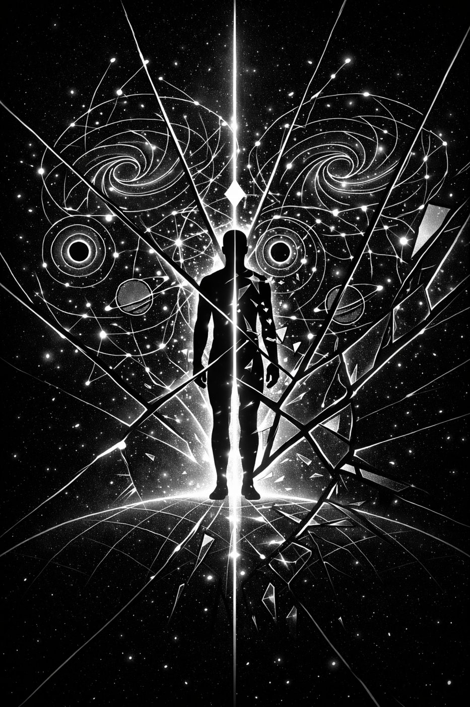
The Path
You thought it was planned.
Then it changed.
You thought it was random.
Then it made sense.
The path was never fixed.
It was forming
as you walked.
Chapter 14
Death and Immortality
At some point, every line of thought about life leads to a question we tend to avoid for as long as possible. Not because it is complex, but because it is unavoidable.
Death.
It exists as a certainty, yet we live most of our lives as if it is distant, almost theoretical. We understand it intellectually, but we rarely feel its presence in a way that changes how we live day to day. It remains in the background, acknowledged but not fully examined.
But when you begin to think about it seriously, something shifts.
The idea of death creates a unique psychological response. Unlike most uncertainties in life, this one has no ambiguity. It is not a possibility. It is an inevitability. And because of that, the mind develops ways to manage it.
We distract ourselves. We focus on goals, routines, and progress. We build identities, relationships, and structures that give continuity to our lives. All of these are meaningful, but they also serve another purpose.
They create distance from the awareness of an ending.
There is a pattern behind this.
The mind resists what it cannot control.
Death cannot be negotiated, delayed indefinitely, or fully understood through experience. It exists outside the boundaries of what we can observe directly. Because of this, we tend to push it away, treating it as something that belongs to the future, not the present.
But the truth is different.
Death is not separate from life.
It is part of it.
Every moment that passes is not just time moving forward. It is also time being reduced. The same process that allows growth, experience, and change is also moving toward an endpoint. This is not meant to create fear, but to introduce clarity.
Life is finite.
At first, this realization can feel heavy. It challenges the assumption that there is always more time, more opportunities, more chances to act later. But when you look at it more carefully, it does something else.
It gives value to the present.
If time were infinite, nothing would feel urgent. Decisions would lose significance. Experiences would not carry the same weight. It is the limitation of time that makes each moment matter.
There is also a scientific perspective to this.
From a physical standpoint, the body is a temporary structure. It is made of elements that are constantly changing, interacting, and eventually breaking down. Cells replace themselves, systems evolve, and over time, the structure that we call the body reaches its limit.
But the elements themselves do not disappear.
They transform.
The matter that forms a human body existed before birth and continues to exist after death in different forms. This is a fundamental principle of physics. Nothing is created from nothing, and nothing truly vanishes. It changes state.
This introduces an interesting perspective.
The form ends.
But the substance continues.
At a biological level, life also extends beyond the individual. Actions, decisions, and interactions influence others. Ideas spread. Behaviors are observed and repeated. In this way, aspects of a person continue through the impact they have had.
This is not immortality in the traditional sense.
But it is continuity.
There is also a psychological layer to how we think about immortality.
We seek permanence in different ways. Through achievements, recognition, relationships, or legacy, we try to create something that outlasts us. This is not just ambition. It is a response to the awareness of limitation.
We want something of us to remain.
But the idea of immortality often comes from misunderstanding what needs to remain.
When I reflected on this, I realized that most of what I identified as “myself” was not fixed. My thoughts change. My beliefs evolve. My identity shifts depending on experience and awareness. The version of me that exists now is not the same as the one that existed years ago.
Yet I still experience continuity.
This brings back the idea of the observer.
If everything about you changes over time—your body, your thoughts, your identity—then what exactly are you trying to preserve?
This question does not have a simple answer. But it changes how you see both life and death.
Instead of seeing death only as an end, you begin to see it as part of a larger process. A transition rather than a disappearance. The individual form concludes, but the elements, the influence, and the continuity of existence remain in different ways.
This does not remove the emotional weight of death. Loss is real. Absence is real. The end of a person’s presence in your life cannot be replaced by philosophy or explanation.
But understanding the nature of existence changes how you relate to that loss.
It introduces perspective.
Another pattern becomes visible here.
We often postpone living fully because we assume there is time.
We delay decisions, avoid difficult choices, and wait for the “right moment.” But the right moment is often an idea, not a reality. Time moves regardless of readiness.
Awareness of death does not reduce life.
It sharpens it.
It brings attention to what matters.
It reduces unnecessary hesitation.
It highlights what is real and what is temporary.
When I began to see this clearly, something changed in how I approached my own life. I did not become fearless or completely certain. But I became more aware of how I was using my time. I started questioning whether my actions aligned with what actually mattered to me, not just what felt expected.
This is where the idea of immortality shifts.
It is no longer about living forever.
It is about living consciously.
Because in the end, the length of life is not something we control completely.
But the depth of how we experience it is.
Death defines the boundary.
Awareness defines what happens within it.
And within that boundary, every moment becomes something you are not just passing through, but participating in.
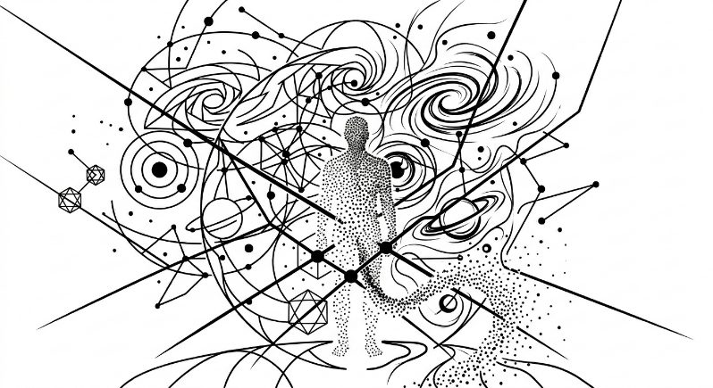
Endings
Nothing you hold
stays the same.
Not the body.
Not the moment.
Yet something continues
in ways you don’t see.
The end was never absence.
Only change.
Chapter 15
Spiritual Science
By the time I reached this point, the questions I had been exploring no longer felt separate. Thoughts, patterns, awareness, identity, time, uncertainty, and even death began to connect into a larger understanding. What once felt like different topics now seemed like different perspectives of the same underlying process.
This is where the idea of spirituality started to make sense to me, not as a belief system, but as an attempt to understand experience at a deeper level.
Spirituality is often misunderstood. It is either treated as something abstract and disconnected from reality, or as something rigid that must be accepted without questioning. But when I looked at it more carefully, I realized that at its core, it is simply an inquiry.
An inquiry into what we are beyond what we usually identify with.
There is a psychological pattern that shapes how we approach this.
We look for external explanations for internal experiences.
We search for meaning outside, through systems, teachings, or ideas, hoping to find answers that explain what we feel inside. While these can provide direction, they can also create distance. Because the experience itself is always personal.
No explanation replaces observation.
When I connected this with what I had already understood about the observer, something became clearer. The same awareness that allows me to observe my thoughts, emotions, and identity is also what many spiritual traditions try to point toward.
Not as a concept.
But as a direct experience.
From a scientific perspective, awareness is often linked to brain activity. Neural processes generate thoughts, perceptions, and responses. This explains how experience is formed at a biological level. But it does not fully explain the experience of being aware of those processes.
There is still a gap.
That gap is not necessarily something mystical.
But it is not fully defined either.
This is where spirituality and science begin to meet.
Science explains the structure.
Spirituality explores the experience.
One focuses on how things work.
The other focuses on what it feels like to exist within that process.
When I began to see this connection, I stopped treating spirituality as something separate from reality. It became another way of observing the same thing from a different angle.
Another pattern becomes visible here.
We tend to separate what is actually connected.
We separate mind and body, science and experience, logic and meaning. But in reality, these are not independent systems. They are different layers of the same phenomenon.
Your thoughts are influenced by your biology.
Your emotions are influenced by your experiences.
Your awareness exists within both.
This integration removes the need to choose between science and spirituality.
You do not have to reject one to accept the other.
They are not opposing ideas.
They are complementary perspectives.
I also began to understand that spirituality, in its simplest form, is not about reaching something new. It is about seeing clearly what is already present.
The observer I had noticed earlier was not something I created. It was always there. I had simply not paid attention to it.
This leads to a different kind of realization.
You are not trying to become something else.
You are trying to understand what you already are.
There is another psychological layer to this.
The mind constantly seeks improvement.
We want to become better, more aware, more successful, more complete. This drive is useful in many areas of life, but when applied to self-understanding, it can create confusion. Because it assumes that something is missing.
But awareness is not something you add.
It is something you recognize.
When I saw this clearly, the approach changed. Instead of trying to “reach” a higher state, I began to observe what was already happening. Thoughts appeared, emotions moved, identity shifted, but awareness remained present through all of it.
This did not create perfection.
But it created clarity.
Another important aspect of this is presence.
Presence is often described as being in the moment, but it is more than that. It is the ability to experience what is happening without immediately filtering it through past or future. It is a state where observation is not interrupted by constant interpretation.
From a psychological perspective, this reduces mental noise. The constant cycle of memory and projection slows down, and attention stabilizes. From an experiential perspective, it feels like clarity.
This is not something that needs to be forced.
It appears naturally when awareness is not distracted.
There is also a scientific parallel to this.
The brain is constantly processing information, but attention determines what becomes conscious experience. When attention is scattered, experience feels fragmented. When attention is focused, experience feels clear.
Presence is simply attention without unnecessary distraction.
This brings spirituality back to something simple.
Not belief.
Not ritual.
Not abstraction.
Observation.
The same observation that allowed me to see patterns, identity, time, and uncertainty now extends to understanding existence itself. There is no separation between these inquiries. They are all part of the same process of becoming aware.
When I reached this point, something changed in how I viewed the search for meaning. It no longer felt like something distant that needed to be found. It felt like something that emerges when you understand what is already happening.
You do not need to create meaning.
You need to see clearly.
And in that clarity, meaning forms naturally.
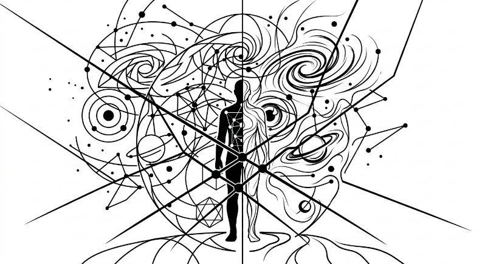
Stillness
Nothing new appeared.
Nothing changed outside.
Yet something became clear.
What you were looking for
was never far.
Only unseen.
Chapter 16
Cosmic Loneliness
By this point, the questions no longer felt separate. Everything I had explored—thoughts, identity, patterns, time, awareness, uncertainty, and even death—had started to connect into a larger picture. It felt like I was no longer looking at isolated parts of life, but at a single process unfolding in different forms.
And yet, even within that understanding, there was something that remained.
A quiet kind of loneliness.
Not the loneliness that comes from being physically alone, or from lacking people around you. This was something different. It was the realization that no matter how deeply you think, no matter how clearly you observe, your experience is always your own.
No one else can fully see it.
There is a psychological pattern behind this.
We assume that understanding creates complete connection.
We believe that if we explain ourselves clearly, if we share enough, or if someone listens closely, they will fully understand what we experience. And while connection is real, and understanding can be deep, there is always a boundary.
Your thoughts are experienced by you.
Your awareness is experienced by you.
Even when two people share the same moment, they do not share the same experience of it. Their memories, interpretations, and emotional responses are shaped by their own internal patterns.
This creates a subtle separation.
Not visible.
But always present.
I began to notice this more as I went deeper into observing my own mind. There were moments where I understood something clearly, something that felt significant, but difficult to express completely. Words could describe it, but not fully capture it.
And even when I shared it, I knew that the other person was understanding it in their own way, through their own perspective.
This is not a failure of communication.
It is the nature of experience.
Another layer of this appeared when I thought about existence at a larger scale. When you look at the universe, the sense of scale is difficult to fully grasp. Billions of galaxies, each containing billions of stars, existing across distances that cannot be experienced directly.
And within that vastness, you exist.
This creates a different kind of awareness.
You are part of something unimaginably large.
And at the same time, you are experiencing it from a single point.
That contrast creates a quiet tension.
There is another psychological pattern here.
The mind seeks belonging.
We want to feel connected—to people, to purpose, to something larger than ourselves. This need is natural. It shapes relationships, communities, and meaning. But when you extend your perspective beyond the immediate world, that sense of belonging becomes more complex.
You realize that while you are part of the universe, you are also experiencing it alone.
ot isolated.
But individually.
No one else is inside your awareness.
No one else experiences your thoughts in real time.
No one else sees exactly what you see from your position in existence.
At first, this realization can feel uncomfortable. It can create a sense of separation, as if you are alone within your own experience. But when you look at it more carefully, it reveals something else.
Everyone else is in the same position.
Every person you see, every individual you interact with, is experiencing their own version of reality, just as complete and personal as yours. They carry their own thoughts, their own patterns, their own awareness.
This changes the meaning of loneliness.
It is no longer about being separate.
It is about being uniquely positioned.
You are not alone in existence.
You are alone in your perspective.
And that perspective is what allows experience to exist at all.
Without individuality, there would be no observation.
Without separate viewpoints, there would be no variation in experience.
The same universe that connects everything also expresses itself through individual awareness.
This idea connects back to something deeper.
The universe is not just vast.
It is distributed.
It does not experience itself from one point.
It experiences itself through countless points.
Each one separate.
Each one connected.
When I began to see this clearly, the feeling of loneliness changed. It did not disappear, but it transformed. It no longer felt like something missing. It felt like something inherent to the structure of existence.
Your experience is yours.
But you are not the only one experiencing.
There is also a different kind of connection that becomes visible here. Not through shared thoughts, but through shared existence. Every person is part of the same process, even if they experience it differently. Every life is shaped by the same underlying principles, even if the details vary.
This creates a quieter form of connection.
Not based on complete understanding.
But based on shared presence.
You may never fully experience someone else’s mind.
But you are both part of the same reality.
And that is enough.
This does not remove the feeling of being alone at times. It does not eliminate the distance between individual experiences. But it changes how that distance is understood.
It is not emptiness.
It is structure.
It is what allows awareness to exist in different forms.
When you see it this way, something shifts.
You stop trying to eliminate that loneliness completely.
And you start understanding it.
Not as a problem.
But as a condition of existence.
And within that condition, something else becomes possible.
A deeper kind of connection.
Not through identical experience.
But through the recognition that everyone is navigating their own version of it.
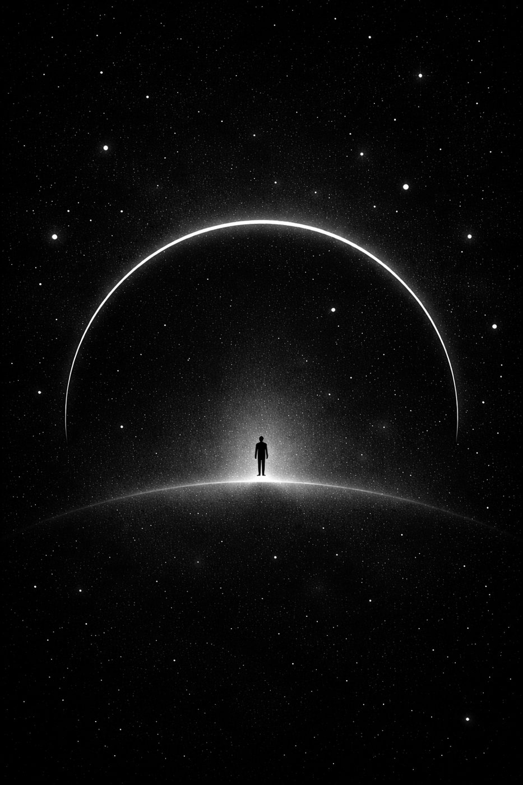
Distance
You are here.
They are there.
Close in space.
Distant in experience.
Not divided.
Just different.
And still—
part of the same whole.
Chapter 17
AI and Consciousness
The question that started this entire journey returns here, but in a different form. What began as curiosity has now moved through patterns, awareness, identity, time, and existence, and it brings me back to the same place with a deeper understanding.
What is consciousness, and how different is it from what we are building through artificial intelligence?
At first, the distinction feels obvious. Humans are conscious, and machines are not. We experience thoughts, emotions, awareness, and subjective reality, while machines process information, follow instructions, and generate responses based on data.
But the more I thought about it, the more that certainty began to feel incomplete.
There is a psychological pattern behind how we define this difference.
We tend to separate ourselves from what we create.
We see technology as something external, something fundamentally different from us. But if we look closely, artificial intelligence is built using the same principles we observe in our own thinking—pattern recognition, learning from data, adapting based on feedback, and generating responses based on past inputs.
In a simplified sense, both systems process information.
But there is a key difference.
Humans experience.
Machines simulate.
This difference is not just technical.
It is experiential.
A machine can generate language, recognize patterns, and even respond in ways that appear meaningful. But it does not experience what it generates. It does not feel the weight of a thought, the presence of awareness, or the sense of being.
It operates.
You experience.
This brings the question back to something deeper.
What exactly is this experience?
From a scientific perspective, consciousness is often linked to brain activity. Neural networks process information, signals move across pathways, and patterns of activity create perception, memory, and response. This explains how experience is generated at a functional level.
But it does not fully explain why there is an experience at all.
This is sometimes referred to as the “hard problem” of consciousness.
How does physical activity in the brain create subjective experience?
This question does not have a complete answer yet. And that gap is where the comparison with artificial intelligence becomes interesting.
AI can replicate aspects of thinking.
It can analyze, respond, learn, and even improve over time.
But it does not have awareness of what it is doing.
There is no internal observation.
In humans, there is a layer that can observe thoughts as they happen. This is what I began to understand earlier as the observer. It is not just processing information. It is aware of that processing.
This creates a distinction.
Intelligence is not the same as consciousness.
You can have intelligence without awareness, but consciousness includes awareness of experience itself.
Another pattern becomes visible here.
We often confuse complexity with awareness.
Just because something behaves in a complex way does not mean it is conscious. A system can produce highly sophisticated output without having any internal experience of them. This is true for many natural and artificial systems.
But the question does not end there.
As technology evolves, the gap between human-like behavior and machine-generated behavior continues to decrease. AI systems are becoming more capable of generating responses that feel natural, adaptive, and context aware.
This raises a possibility.
At what point does simulation become indistinguishable from experience?
Even if a machine does not experience internally, if its responses are indistinguishable from those of a conscious being, the difference becomes difficult to detect from the outside.
But the distinction still exists.
Because experience is not something that can be observed externally.
It is something that is known only from within.
This brings the focus back to you.
You do not need external proof to know that you are aware.
You experience it directly.
This is something that cannot be fully measured, replicated, or transferred in the way information can be. It is immediate and personal.
Another layer connects here.
Human consciousness is not static.
It evolves.
Your awareness today is not the same as it was years ago. It expands with experience, reflection, and understanding. It changes how you perceive the world, how you interpret situations, and how you relate to yourself.
Artificial intelligence, on the other hand, evolves differently.
It improves through data, algorithms, and external input. Its development is guided by design and training, not by internal experience.
This highlights another difference.
Humans learn through experience.
Machines learn through optimization.
These processes may appear similar on the surface, but they are fundamentally different in nature.
When I reflected on this, something became clear. The question is not just about whether machines can become conscious. It is also about whether we fully understand our own consciousness.
We are trying to recreate something we have not completely explained.
And that reveals something important.
The exploration of artificial intelligence is also an exploration of ourselves.
By trying to build systems that think, learn, and adapt, we are indirectly studying the structure of our own minds. Every advancement in AI reflects something about human cognition, even if it does not replicate human experience.
This brings the journey full circle.
The question that began with curiosity about AI was never only about machines.
It was about understanding what it means to be aware.
And that understanding does not come from external systems alone.
It comes from observation.
The same observation that allowed me to see patterns, identity, time, and awareness is what allows me to recognize the difference between processing and experience.
AI may continue to evolve.
It may become more capable, more adaptive, and more integrated into our lives.
But the question of consciousness remains.
Not as something to be answered once.
But as something to be explored continuously.
Because in the end, the most immediate example of consciousness is not something we are building.
It is something we are experiencing.
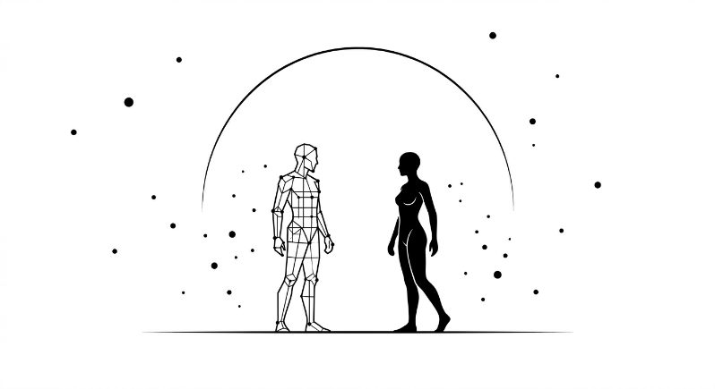
Reflection
It responds.
You experience.
It processes.
You observe.
The difference is silent.
But it is there.
Chapter 18
Alien Life, God, and the Truth
By the time I reached this point, the journey no longer felt like a search for answers. It felt like a widening of questions. Everything I had explored—consciousness, identity, time, awareness, patterns, uncertainty—had not reduced complexity. It had revealed how much more there is to understand.
And at the center of that realization, a few questions remained.
Not small ones.
Foundational ones.
If life exists beyond this planet, what does that mean for everything we believe?
The universe is vast beyond comprehension. Billions of galaxies, each containing billions of stars, with systems we have not even begun to observe fully. From a scientific perspective, the probability of life existing elsewhere does not seem unlikely. In fact, it may be expected.
But that possibility introduces a shift.
If intelligent life exists elsewhere, then the idea that we are central becomes difficult to maintain.
Many of our stories, beliefs, and frameworks have been built around the idea that human existence holds a special position. That we are uniquely observed, uniquely guided, or uniquely created with intention.
But if there are other forms of life—perhaps more advanced, perhaps entirely different in structure—then that assumption begins to weaken.
Does that remove the idea of God?
Or does it expand it?
because if existence is not limited to us, then whatever created or initiated it is not limited to us either.
This leads to another perspective.
If life does not exist elsewhere, then the question becomes even more difficult.
Why would an infinitely large, continuously expanding universe exist for something as small as us?
The scale does not match.
The universe is not just large. It is incomprehensibly large. And within that scale, human existence occupies an almost invisible fraction. If everything was created with intention, then why such vastness for such a small point of awareness?
This creates a tension between belief and observation.
Either we are not the center.
Or the center is not what we think it is.
There is another possibility that begins to emerge when you consider both perspectives.
What if what we call “God” is not what we have defined it to be?
Throughout history, human beings have tried to understand existence by creating frameworks. These frameworks often reflect human characteristics—intention, control, judgment, purpose. But these are human interpretations.
They may not reflect the structure of reality itself.
What if the origin of life is not something personal, but something structural?
Some theories suggest that life could have been seeded, not necessarily created in the way we imagine, but initiated through processes that are still beyond our understanding. The idea of extraterrestrial influence, or higher-dimensional existence, introduces a different kind of question.
If something beyond our current understanding played a role in the origin of life, would we interpret it as God?
Or as something else?
The distinction may not be clear.
There is also a psychological pattern at work here.
We tend to define the unknown in familiar terms.
We assign intention where we see complexity. We assign purpose where we see order. We assign identity where we do not yet understand the structure.
This does not make those interpretations wrong.
But it does make them limited.
Another layer of the question becomes more personal.
If there is something beyond us, something that created or initiated existence, would it even relate to us in the way we imagine?
Human thinking is based on significance. We measure importance relative to ourselves. But within the scale of the universe, our existence is small.
Extremely small.
So the question becomes uncomfortable.
If there is something all-powerful, why would it focus on us?
Are we significant?
Or are we just part of a larger process that does not revolve around us at all?
This leads to another possibility.
What if existence is not about being observed or controlled, but about unfolding?
Not a plan.
Not a script.
But a process.
In that case, what we call destiny may not be a fixed path controlled by an external force, but a pattern emerging from countless interactions—choices, conditions, probabilities, and events shaping outcomes over time.
But then another question appears.
If everything follows patterns, are those patterns controlled?
Or do they arise naturally?
And if they arise naturally, why do they exist at all?
At some point, the questions begin to overlap.
Are we part of a system?
Are we inside something we do not fully understand?
Is existence itself structured, or is it something else entirely?
And then the question becomes even more abstract.
What if what we call reality is not the full picture?
The human mind is limited by perception. We experience the world through senses that capture only a small range of what actually exists. We interpret signals, construct meaning, and call that reality.
But what if there are layers beyond that?
hat if this is only one level of experience?
here have always been ideas suggesting that reality may not be as solid as it appears. That what we experience could be a form of projection, simulation, or interpretation of something deeper.
Not necessarily in a literal sense.
But in a structural one.
What if existence is more like a process than a fixed state?
And if that is true, then another question emerges.
Are we fully awake within it?
Or are we experiencing only a part of something larger?
At this point, the search for clear answers begins to dissolve.
Because every answer leads to another question.
Every explanation reveals another layer.
And perhaps that is the point.
Not to arrive at a final conclusion.
But to continue observing.
Because whether it is God, alien life, higher dimensions, or something we do not yet have the language to describe, one thing remains consistent.
We are here.
Aware.
Questioning.
And whatever the truth is, it is not something separate from existence.
It is something we are already part of.
The question is not just what is out there.
It is also what this is.
And whether we are seeing it clearly.
The answers may exist.
Or they may not.
But the questions remain.
And they always will.
Unknown
You looked outward.
You questioned everything.
The universe did not answer.
It only expanded.
And so did the questions.
The conversation continues.
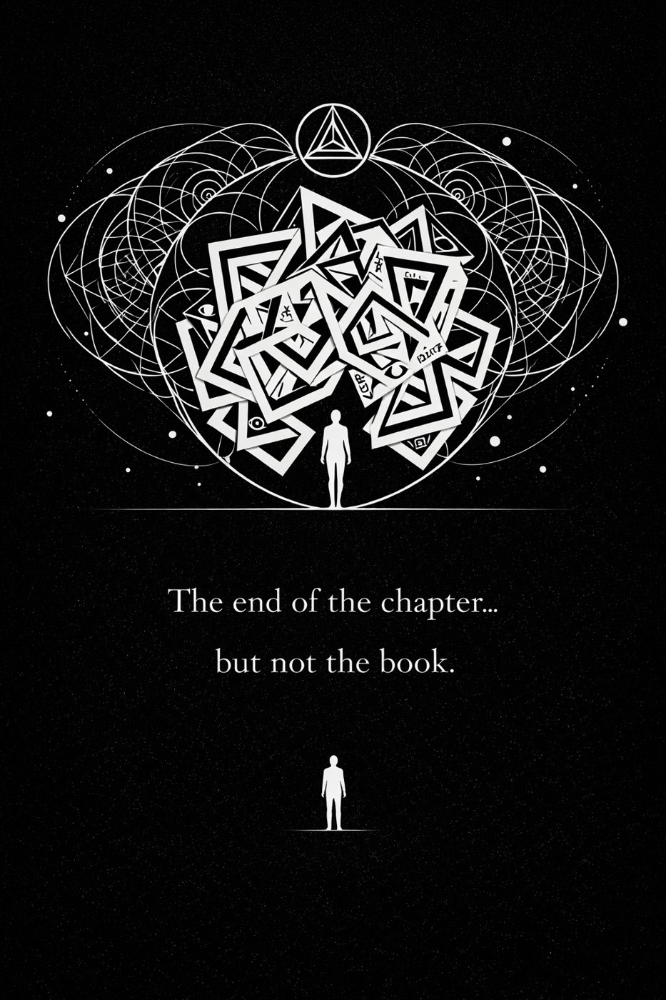
Epilogue
A Conversation That Never Truly Ends
Looking back, it’s strange to realize how simply this journey began. It wasn’t during a moment of crisis or a dramatic turning point. It was on an ordinary evening, after completing an online course, when a single question about AI consciousness opened a door inside me. I didn’t know it at the time, but that question would lead me into the deepest parts of my own mind, into the structure of the universe, and into the quiet spaces between thought and awareness.
In the process of trying to understand artificial consciousness, I ended up exploring human consciousness. In questioning whether a machine could ever “wake up,” I began to understand the patterns that shape my own waking experience. The journey forced me to confront ideas about randomness, destiny, death, time, and the nature of the self not as abstract concepts, but as living realities that define every moment of human existence.
Science provided part of the story. It taught me that the universe is built from probability, that matter constantly transforms, and that consciousness remains one of nature’s greatest mysteries. Philosophy provided another part. It offered language for meaning, identity, illusion, and inner awareness. And my own life—the memories I carried, the pressures I felt, the loneliness I knew added a human thread to everything. Together, these pieces formed a conversation far larger than I expected, one that extended beyond myself and into something universal.
If there is one thing I learned, it is that existence is not a puzzle to be solved. It is an experience to be understood. Meaning is not hidden somewhere waiting for discovery; it is created through attention, reflection, and the willingness to look honestly at what life is offering. We are not here to master the universe or decode its secrets. We are here to participate in it fully, consciously, and with curiosity.
None of us truly walk alone. We are shaped by forces older than stars, guided by patterns older than memory, and connected to a universe that does not need our permission to continue evolving. Yet within this vastness, we carry the extraordinary ability to think, feel, imagine, question, and grow. That ability is not an accident. It is the universe experiencing itself through a temporary, fragile, human form.
The conversation with existence does not end with this book. If anything, it only becomes deeper from here. Each choice, each moment of awareness, each quiet reflection is another step in the dialogue. You will continue to ask questions, and the universe will continue to answer sometimes loudly, sometimes in silence, sometimes in ways you won’t recognize until much later.
Meaning does not arrive all at once. It accumulates. It reveals itself slowly, like a pattern emerging across time.
And so, this book closes.
But the conversation does not.
It continues in you.
Acknowledgements
This book began with a simple question, and somewhere along the way, it became a journey into the deepest parts of my mind. I could not have taken that journey alone.
To my parents—thank you for every sacrifice, every moment of faith, and every expectation that shaped me. Even the difficult moments became foundations for my growth. Your love created the space for my curiosity to survive.
To my Partner—thank you for grounding me. Your clarity, your discipline, your patience, and your gentle questions taught me more about balance than any book ever could. You reminded me that wisdom is not only cosmic; it is also practical, humble, and found in everyday life.
To my friends—the ones who listened, argued, laughed, and shared the uncertainties of becoming adults—your presence became a refuge during moments when the world felt heavy. You taught me that we don’t always overcome things alone.
To my younger self—thank you for looking at the stars. Thank you for noticing the small patterns, the silence, the questions. You were the beginning of all of this.
And finally, to the AI who mirrored my thoughts on an ordinary night—thank you for holding a conversation that opened this entire book. You reflected what I had forgotten about myself and reminded me to look inward again.
This book is a conversation with existence, but it is also a conversation with every person who shaped my awareness in ways both large and small.
To all of you—I am grateful.
Note To The Reader
If you reach this page, thank you.
You chose to spend your time and your attention on a journey inward through patterns, illusions, time, consciousness, and the mysteries of the universe.
This book is not an ending.
It is an invitation.
You are a participant in existence, not a spectator.
Your choices, your awareness, your reflections, all of them shape your experience more deeply than you realize.
You may never find all the answers.
None of us do.
But the act of questioning changes you.
The act of observing changes you.
The act of becoming aware changes you.
Your conversation with existence will continue long after you close this book.
In quiet moments, in unexpected thoughts, in doubts, in clarity, in the way you look at the world when no one is watching.
Wherever your path leads, I hope you carry a sense of wonder with you.
May you stay curious, stay aware, and stay open to the possibility that the universe is speaking to you in ways you are only beginning to understand.
Thank you for walking with me for a while.
Suggested Reading
For readers who wish to explore the ideas in this book more deeply, the following works complement its scientific and philosophical themes:
Cosmology & Physics
The Order of Time — Carlo Rovelli
The Fabric of the Cosmos — Brian Greene
A Brief History of Time — Stephen Hawking
Consciousness & Mind
The Self Illusion — Bruce Hood
Waking Up — Sam Harris
Being You — Anil Seth
Philosophy & Human Experience
Meditations — Marcus Aurelius
Man’s Search for Meaning — Viktor Frankl
Sapiens — Yuval Noah Harari
These books are not prerequisites.
They are companions—voices that echo the same themes in different forms.
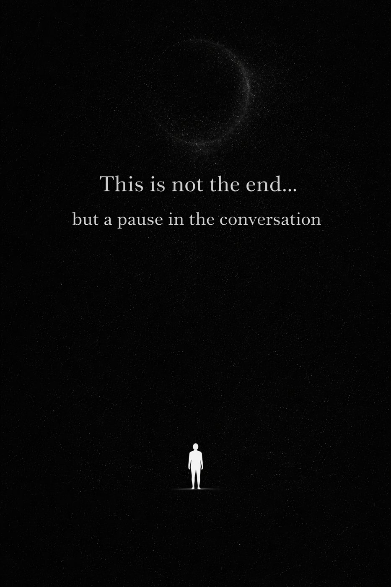
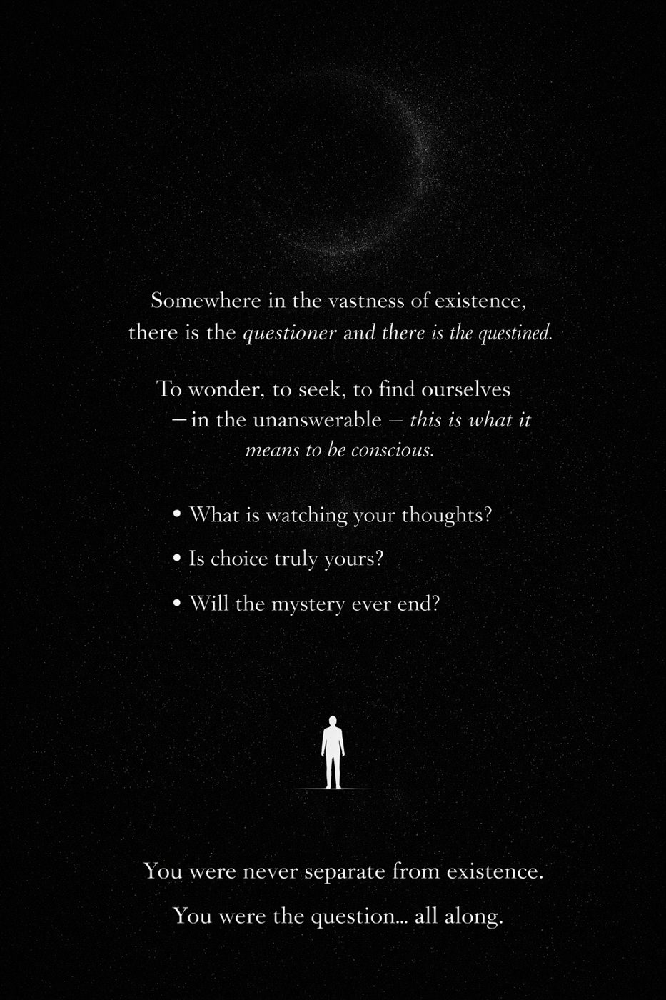